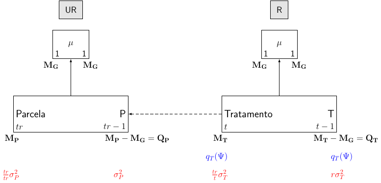
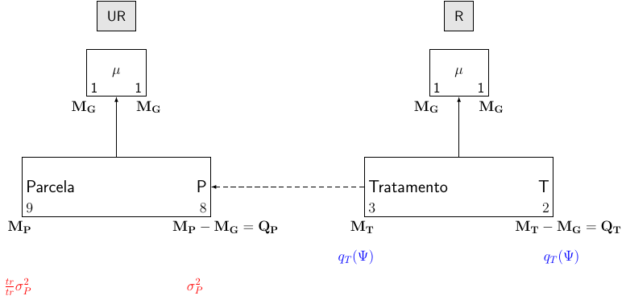
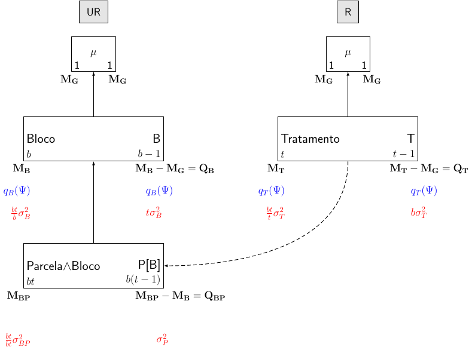
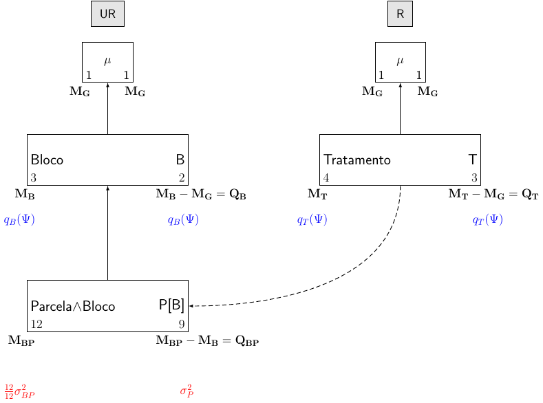
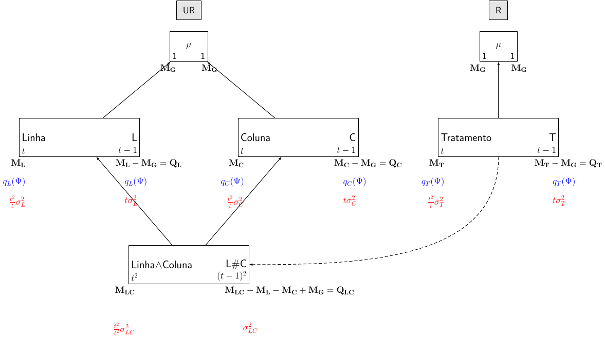
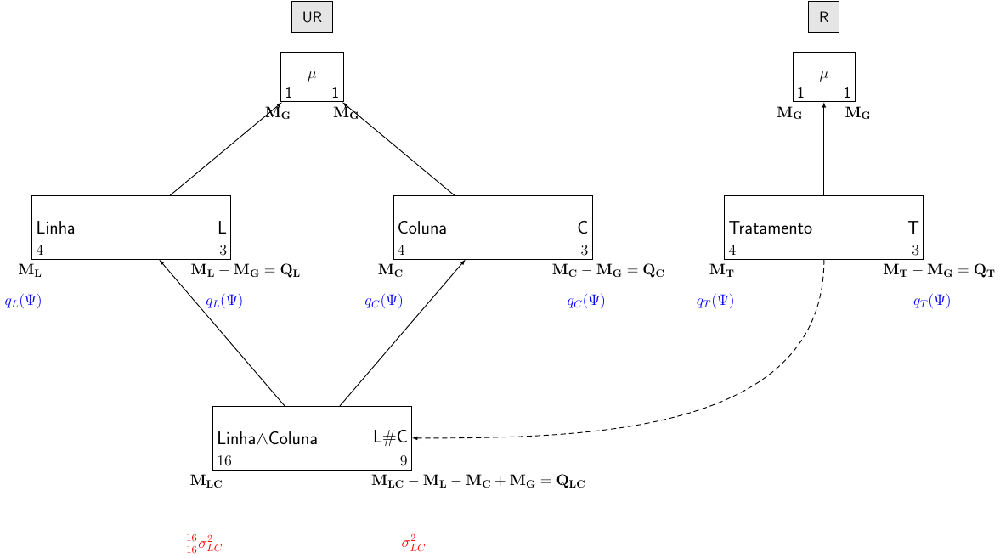
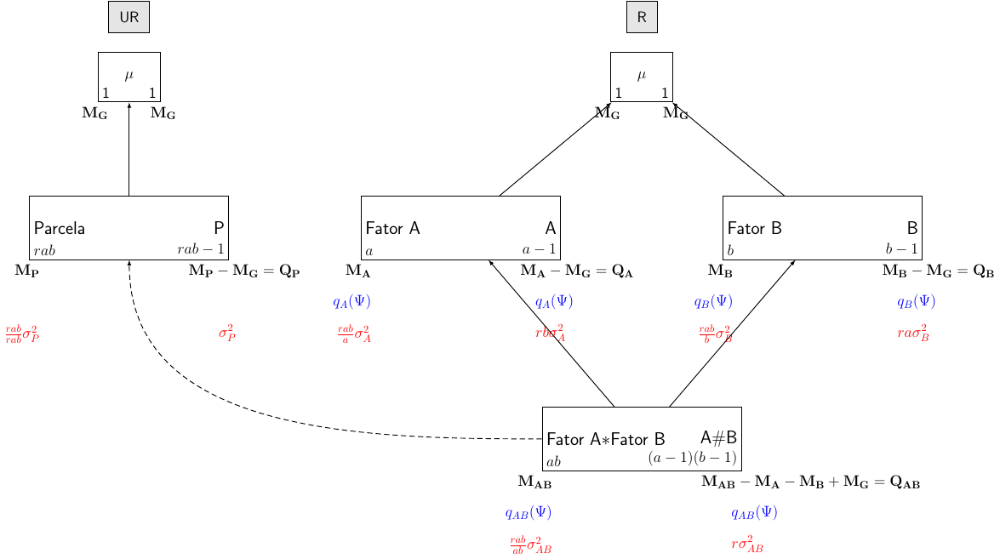

Diagrama de Hasse para planejamento e análise de dados experimentais
Objetivo
Determinação do modelo e da tabela de análise de variância para experimentos planejados em qualquer tipo de delineamento.
Procedimentos gerais
O procedimento consiste de 7 passos:
- Descrição das características pertinentes ao estudo
- Estrutura experimental
- Fontes de variação, obtidas através da fórmula estrutural
- Número de graus de liberdade e somas de quadrados
- Tabela de análise de variância
- Modelos de esperança e de variância (maximais)
- Esperanças dos quadrados médios
1. Descrição das características pertinentes ao estudo
Consiste em identificar:
- Unidade observacional: entidade física medida
- Variável resposta: variávelde intersse
- Fatores não casualizados (unrandomized): aqueles que indexariam as unidades observacionais se nenhuma casualização fosse empregada
- Fatores casualizados (randomized): aqueles associados às unidades observacionais como resultado da casualização
- Tipo de estudo: delineamento experimental associado ao esquema de tratamento ou método de amostragem
Observação: Para determinar se um fator é randomized ou unrandomized, deve-se fazer a seguinte pergunta:
- Para uma unidade observacional os níveis do fator podem ser identificados se a casualização ainda não foi realizada?
- Se sim, então o fator é unrandomized
- Se não, então o fator é randomized
2. Estrutura experimental
Para determinar a estrutura experimental:
- Descrever a relação de cruzamento ou aninhamento entre os fatores unrandomized no experimento
- Descrever a relação de cruzamento ou aninhamento entre:
- os fatores randomized
- os fatores randomized e unrandomized (se houver)
- Acrescentar o número de níveis dos fatores em frente aos nomes
Simbologia:
| Fatores | Símbolo |
|---|---|
| Cruzados | \(A * B\) |
| Aninhados | \(A/B\) |
Fórmula estrutural
Exemplo para DBC com \(b\) blocos, \(k\) parcelas e \(t\) tratamentos:
| Estrutura | Fórmula |
|---|---|
| Unrandomized | \(b\) blocos/\(k\) parcelas |
| Randomized | \(t\) tratamentos |
Exemplo para DQL com \(k\) linhas e colunas, e \(t\) tratamentos:
| Estrutura | Fórmula |
|---|---|
| Unrandomized | \(k\) linhas \(*\) \(k\) colunas |
| Randomized | \(t\) tratamentos |
3. Fontes de variação obtidas através da fórmula estrutural
Regras para expandir a fórmula estrutural:
\[ A*B = A + B + A\#B \]
\[ A/B = A + B[fg(A)] \]
Onde \(fg(A)\) é chamado de fator generalizado. Um fator generalizado é formado a partir de vários fatores originais, cujos níveis são combinações dos níveis dos fatores originais. Sua representação é uma lista dos fatores constituintes, separados por “\(\wedge\)”.
Exemplo para DBC:
\[ \textrm{Blocos}/\textrm{Parcelas} = \textrm{Blocos} + \textrm{Parcelas[Blocos]} \]
Exemplo para DQL:
\[ \textrm{Linhas}*\textrm{Colunas} = \textrm{Linhas} + \textrm{Colunas} + \textrm{Linhas # Colunas} \]
4. Número de graus de liberdade e somas de quadrados
O Diagrama de Hasse é uma representação de marginalidade entre os componentes envolvidos.
Marginalidade: Um fator generalizado \(V\) é marginal a outro fator generalizado \(Z\), se os fatores de \(V\) são um subconjunto de \(Z\). Notação: \(V \leq Z\).
Diagrama de Hasse: o diagrama de Hasse para os fatores generalizados de uma fórmula estrutural é formado tal que, a posição das “caixas” representando tais fatores generalizados indique a relação entre os fatores presentes em cada fórmula estrutural:
- Um fator generalizado (FG) deve estar acima do FG para o qual o primeiro é marginal
- Se dois FGs são cruzados, devem estar na mesma linha
- Acima de todos os FGs, coloca-se a média universal \(\mu\)
- À esquerda, escreve-se o FG e o número de níveis. À direita, escreve-se o número de graus de liberdade e a fonte da variação
- Os graus de liberdade são obtidos pela diferença entre o número de níveis do FG e a soma dos graus de liberdade de todos os fatores marginais à ele (“acima” dele)
Somas de quadrados: são formas quadráticas do tipo \(\mathbf{Y'QY}\).
A matriz \(\mathbf{Q}\) pode ser expressa em função das matrizes de projeção \(\mathbf{M}\), \[ \mathbf{M} = \mathbf{X(X'X)^{-1}X'} \] Onde \(\mathbf{X}\) é a matriz de incidência, de posto completo.
Portanto, \(\mathbf{Q}\) é a diferença algébrica de matrizes \(\mathbf{M}\).
Exemplo para DBC:
\[ \begin{align} \textrm{SQB} &= \mathbf{Y'Q_{B}Y} \\ \textrm{SQP[B]} &= \mathbf{Y'Q_{BP}Y} \\ \textrm{SQTrat} &= \mathbf{Y'Q_{T}Y} \\ \textrm{SQRes} &= \mathbf{Y'Q_{Res}Y} \end{align} \]
Onde:
\[ \begin{align} \mathbf{Q_B} &= \mathbf{M_B - M_G} \\ \mathbf{Q_{BP}} &= \mathbf{M_{BP} - M_G} \\ \mathbf{Q_T} &= \mathbf{M_T - M_G} \\ \mathbf{Q_{Res}} &= \mathbf{M_{BP} - M_{B} - M_{T} + M_G} \end{align} \]
5. Tabela de análise de variância
- Listar todas as fontes unrandomized
- Alocar as fontes randomized sob as fontes unrandomized com as quais estão confundidas (identadas)
- Adicionar fontes residuais às porções restantes das fontes unrandomized
Exemplo para DBC:
| Fonte de variação | GL | SQ |
|---|---|---|
| Blocos | \(b-1\) | \(\mathbf{Y'Q_{B}Y}\) |
| Parcelas[Blocos] | \(b(t-1)\) | \(\mathbf{Y'Q_{BP}Y}\) |
| Tratamentos | \(t-1\) | \(\mathbf{Y'Q_{T}Y}\) |
| Resíduo | \((b-1)(t-1)\) | \(\mathbf{Y'Q_{Res}Y}\) |
6. Modelos de esperança e variância
- Designar cada fator original como fixo ou aleatório
- Determinar se um fator generalizado (FG) é potencialmente de esperança ou de variância:
- fator generalizado de efeito fixo: esperança
- pelo menos um fator generalizado de efeito aleatório: termo de variação
- termo consistindo de todos os fatores não casualizados é considerado aleatório
- O modelo de esperança maximal (\(\boldsymbol{\Psi}\)) dá-se pela soma dos termos de esperança
- O modelo de variação maximal dá-se pela soma de todos os termos de variação
Efeito aleatório:
- Grande número de níveis na população
- Comportamento aleatório
- Seus níveis podem ser descritos por uma distribuição de probabilidade
Efeito fixo:
- Número pequeno ou grande de níveis
- Comportamento sistemático
- Não podem ser descritos por uma distribuição de probabilidade
Exemplo para DBC:
Considerando todos os fatores de efeito fixo, o modelo maximal usual é: \[ y_{ij} = \mu + \beta_j + \tau_i + \epsilon_{ij}\, \qquad j = 1, \ldots, b;\, i = 1, \ldots, t \] Assim: \[ \begin{align} \text{E}(Y_{ij}) &= \mu + \beta_i + \tau_i \\ \text{V}(Y_{ij}) &= \sigma^2_{BP} \\ \text{Cov}(Y_{ij}, Y_{i'j'}) &= 0 \,, \quad i \neq i', j \neq j' \end{align} \] Matricialmente: \[ \begin{align} \boldsymbol{\Psi} = \text{E}(\mathbf{Y}) &= \mathbf{X_G}\boldsymbol{\mu} + \mathbf{X_B}\boldsymbol{\beta} + \mathbf{X_T}\boldsymbol{\tau} \\ \text{V}(\mathbf{Y}) &= \sigma^2_{BP} \mathbf{I_n} \end{align} \] Simbolicamente: \[ \begin{align} \boldsymbol{\Psi} = \text{E}(\mathbf{Y}) &= \textrm{Bloco} + \textrm{Tratamento} \\ \text{V}(\mathbf{Y}) &= \textrm{Bloco} \wedge \textrm{Parcela} \end{align} \]
Considerando bloco de efeito aleatório, o modelo maximal usual é: \[ y_{ij} = \mu + \beta_j + \tau_i + \epsilon_{ij}\, \qquad j = 1, \ldots, b;\, i = 1, \ldots, t \] Assim: \[ \begin{align} \text{E}(Y_{ij}) &= \mu + \tau_i \\ \text{V}(Y_{ij}) &= \sigma^2_{BP} + \sigma^2_{B} \\ \text{Cov}(Y_{ij}, Y_{i'j}) &= \sigma^2_{B} \,, \quad i \neq i' \\ \text{Cov}(Y_{ij}, Y_{i'j'}) &= 0 \,, \quad j \neq j' \end{align} \] Matricialmente: \[ \begin{align} \boldsymbol{\Psi} = \text{E}(\mathbf{Y}) &= \mathbf{X_G}\boldsymbol{\mu} + \mathbf{X_T}\boldsymbol{\tau} \\ \text{V}(\mathbf{Y}) &= \sigma^2_{BP} \mathbf{I_n} + \sigma^2_{B} (\mathbf{I_b} \otimes \mathbf{J_t}) \end{align} \] Simbolicamente: \[ \begin{align} \boldsymbol{\Psi} = \text{E}(\mathbf{Y}) &= \textrm{Tratamento} \\ \text{V}(\mathbf{Y}) &= \textrm{Bloco} + \textrm{Bloco} \wedge \textrm{Parcela} \end{align} \]
7. Esperanças dos quadrados médios
- Se \(F\) é um termo no modelo de variação, atribuir \(\frac{n}{f}\sigma^2_F\), onde \(n\) é o número de unidades experimentais, e \(f\) é o número de níveis de \(F\). Se \(F\) é um termo no modelo de esperança, atribuir \(q_F(\Psi)\)
- Do lado direito de cada FG, somar as contribuições para a esperança do quadrado médio, \(\textrm{E}[QM]\)
- Esse procedimento é o único que é realizado de baixo para cima no diagrama de Hasse
- Adicionar as contribuições dos fatores unrandomized na tabela
- Repetir o passo (2) e somar as contribuições àquelas que já estão na tabela
Exemplo para DBC:
| Fonte de variação | E[QM] (Fixo) | E[QM] (Bloco Aleat.) |
|---|---|---|
| Blocos | \(\sigma^2_{BP} + q_B(\Psi)\) | \(\sigma^2_{BP} + \sigma^2_B\) |
| Parcelas[Blocos] | ||
| Tratamentos | \(\sigma^2_{BP} + q_T(\Psi)\) | \(\sigma^2_{BP} + q_T(\Psi)\) |
| Resíduo | \(\sigma^2_{BP}\) | \(\sigma^2_{BP}\) |
Nota sobre \(E[QM]\):
Na tabela de análise de variância, temos um valor F, que é a razão de dois quadrados médios. Por que isso é apropriado? Para responder essa pergunta devemos olhar para o que os dois quadrados médios medem, e isso é feito através dos valores esperados dos quadrados médios.
A esperança do quadrado médio são os valores médios dos quadrados médios na população que é descrita pelo modelo considerado, ou seja, um quadrado médio esperado é o verdadeiro valor na população. Isto é análogo à dizer que o valor esperado de uma observação na opulação é sua média. Assim, se tivessemos a população completa para todos os tratamentos, e calculassemos os quadrados médios destes dados completos, então os valores seriam aqueles dados pela tabela.
Note que os valores médios na população envolvem \(\sigma^2\), a variação devido ao acaso (não controlada) entre as unidades do mesmo tratamento. No entanto, esse valor médio também depende de uma quantidade \(q_F(\Psi)\) (onde \(F\) é um fator qualquer).
Mas o que é \(q_F(\Psi)\)? Note que o subscrito \(F\) denota que ele envolve a matriz \(Q_F\). Por exemplo, considere o termo pata tratamento, \(q_T(\Psi)\). De fato,
\[ \begin{align} q_T(\Psi) &= \frac{\boldsymbol{\Psi}'\mathbf{Q_T}\boldsymbol{\Psi}}{(t-1)} \\ &= \frac{\Sigma_{i=1}^{t} r_i (\tau_i - \bar\tau_{.})^2}{(t-1)} \end{align} \]
cujo denominador é o mesmo que uma soma de quadrados, exceto que é uma forma quadrática em \(\boldsymbol{\Psi}\) ao invés de \(\mathbf{Y}\), onde
\[ \boldsymbol{\Psi} = \begin{bmatrix} E(Y_1) \\ E(Y_2) \\ \vdots \\ E(Y_n) \end{bmatrix} \]
Em todo caso, \(q_T(\Psi)\) é uma forma quadrática e deve ser não negativa. De fato, a magnitude dessa quantidade vai depender do tamanho das diferenças entre as médias de tratamento e a média geral. Se os efeitos forem próximos, então serão parecidos com a média, enquanto que se forem mais espaçados haverá maior distância de média. Consequentemente, a média de quadrado de tratamento será (em média) maior do que e média de quadrado residual, pois é influenciada tanto pela variação não controlada e a magnitude dos efeitos.
Portanto, \(q_T(\Psi)\) só será zero quando os efeitos de tratamento forem iguais, ou seja, quando a hipótese nula for verdadeira. Dessa forma, os quadrados médios serão parecidos e o valor de F será próximo de 1. Assim, as seguintes hipóteses são equivalentes:
\[ \begin{align} H_0 &: q_T(\Psi) = 0 \\ H_0 &: \tau_i = \tau_2 = \ldots = \tau_t \end{align} \]
Principais delineamentos
Delineamento inteiramente casualizado (DIC)
Considere um experimento em um delineamento inteiramente casualizado com \(t\) tratamentos e \(r\) repetições.
O modelo associado à este delineamento é
\[ y_{ij} = \mu + \tau_i + \epsilon_{ij}\, \qquad i = 1, \ldots, t;\, j = 1, \ldots, r \]
Matricialmente o modelo pode ser escrito como:
\[ \begin{align} \mathbf{Y} &= \mathbf{X}\boldsymbol{\theta} + \boldsymbol{\epsilon} \\ \mathbf{Y} &= \mathbf{X_G}\boldsymbol{\mu} + \mathbf{X_T}\boldsymbol{\tau} + \boldsymbol{\epsilon} \end{align} \]
- Fórmula estrutural
| Estrutura | Fórmula |
|---|---|
| Unrandomized | \(tr\) parcelas |
| Randomized | \(t\) tratamentos |
- Diagrama de Hasse

- Tabela de ANOVA
| Fonte de variação | GL | SQ | QM | E[QM] (Fixo) | E[QM] (Aleat.) |
|---|---|---|---|---|---|
| Parcelas | \(tr-1\) | \(\mathbf{Y'Q_PY}\) | |||
| Tratamentos | \(t-1\) | \(\mathbf{Y'Q_TY}\) | \(\frac{\mathbf{Y'Q_TY}}{t-1}\) | \(\sigma^2_P + q_T(\Psi)\) | \(\sigma^2_P + r \sigma^2_T\) |
| Resíduo | \(t(r-1)\) | \(\mathbf{Y'Q_{Res}Y}\) | \(\frac{\mathbf{Y'Q_{Res}Y}}{t(r-1)}\) | \(\sigma^2_P\) | \(\sigma^2_P\) |
Onde:
\[ \begin{align} \mathbf{Q_P} &= \mathbf{M_P - M_G} \\ \mathbf{Q_{T}} &= \mathbf{M_{T} - M_G} \\ \mathbf{Q_{Res}} &= \mathbf{Q_P - Q_T} \\ &= \mathbf{M_P - M_G - (M_T - M_G)} \\ &= \mathbf{M_P - M_T} \end{align} \]
E:
\[ \begin{align} \mathbf{M_G} &= \mathbf{X_G(X'_G X_G)^{-1}X'_G} \\ \mathbf{M_P} &= \mathbf{X_P(X'_P X_P)^{-1}X'_P} \\ \mathbf{M_T} &= \mathbf{X_T(X'_T X_T)^{-1}X'_T} \end{align} \]
- Hipóteses e teste \(F\)
| Fixo | Aleatório | |
|---|---|---|
| Tratamento | \(H_0: q_T(\Psi) = 0\) | \(H_0: \sigma^2_T = 0\) |
Testes:
\[ F_T = \frac{\textrm{QMT}}{\textrm{QMRes}} \]
- Exemplo no R
Os dados apresentados a seguir referem-se à produções (kg/m\(^2\)) de 3 variedades de soja obtidas de um experimento instalado segundo o delineamento inteiramente casualizado (DIC) com 3 repetições. Aqui considera-se tratamento como de efeito fixo.
## Dados
da.dic <- data.frame(variedade = rep(c("V1", "V2", "V3"), each = 3),
parcela = factor(1:9),
producao = c(41, 40, 44,
51, 48, 50,
53, 54, 52))
## Estrutura dos dados
str(da.dic)
# 'data.frame': 9 obs. of 3 variables:
# $ variedade: Factor w/ 3 levels "V1","V2","V3": 1 1 1 2 2 2 3 3 3
# $ parcela : Factor w/ 9 levels "1","2","3","4",..: 1 2 3 4 5 6 7 8 9
# $ producao : num 41 40 44 51 48 50 53 54 52
## Croqui do experimento
set.seed(11)
matrix(sample(da.dic$variedade), ncol = 3)
# [,1] [,2] [,3]
# [1,] "V1" "V3" "V2"
# [2,] "V1" "V2" "V3"
# [3,] "V2" "V3" "V1"A fórmula estrutural é:
| Estrutura | Fórmula |
|---|---|
| Unrandomized | \(9\) parcelas |
| Randomized | \(3\) tratamentos |
O diagrama de Hasse fica desta forma:

A tabela de ANOVA fica:
| Fonte de variação | GL | SQ | QM | E[QM] (Fixo) |
|---|---|---|---|---|
| Parcelas | \(8\) | \(\mathbf{Y'Q_PY}\) | ||
| ¬¬Tratamentos | \(2\) | \(\mathbf{Y'Q_TY}\) | \(\frac{\mathbf{Y'Q_TY}}{t-1}\) | \(\sigma^2_P + q_T(\Psi)\) |
| ¬¬Resíduo | \(6\) | \(\mathbf{Y'Q_{Res}Y}\) | \(\frac{\mathbf{Y'Q_{Res}Y}}{t(r-1)}\) | \(\sigma^2_P\) |
Calculando as matrizes \(\mathbf{Q}\) manualmente:
##----------------------------------------------------------------------
## Atribui nomes comuns para variável resposta e tratamento
var.resp <- da.dic$producao
tratamento <- da.dic$variedade
parcela <- da.dic$parcela
##----------------------------------------------------------------------
## Definições
(t <- length(unique(tratamento)))
# [1] 3
(r <- unique(table(tratamento)))
# [1] 3
(n <- length(var.resp)) # t*r para o caso balanceado
# [1] 9
##----------------------------------------------------------------------
## Matrizes
## Vetor de respostas
(Y <- matrix(var.resp, ncol = 1))
# [,1]
# [1,] 41
# [2,] 40
# [3,] 44
# [4,] 51
# [5,] 48
# [6,] 50
# [7,] 53
# [8,] 54
# [9,] 52
## Matriz de médias
(Xg <- matrix(rep(1, n), ncol = 1))
# [,1]
# [1,] 1
# [2,] 1
# [3,] 1
# [4,] 1
# [5,] 1
# [6,] 1
# [7,] 1
# [8,] 1
# [9,] 1
## Matriz de tratamentos
Xt <- matrix(0, nrow = n, ncol = t)
Xt[cbind(seq_along(tratamento), tratamento)] <- 1; Xt
# [,1] [,2] [,3]
# [1,] 1 0 0
# [2,] 1 0 0
# [3,] 1 0 0
# [4,] 0 1 0
# [5,] 0 1 0
# [6,] 0 1 0
# [7,] 0 0 1
# [8,] 0 0 1
# [9,] 0 0 1
## Matriz de parcelas (identidade)
(Xp <- diag(1, nrow = n))
# [,1] [,2] [,3] [,4] [,5] [,6] [,7] [,8] [,9]
# [1,] 1 0 0 0 0 0 0 0 0
# [2,] 0 1 0 0 0 0 0 0 0
# [3,] 0 0 1 0 0 0 0 0 0
# [4,] 0 0 0 1 0 0 0 0 0
# [5,] 0 0 0 0 1 0 0 0 0
# [6,] 0 0 0 0 0 1 0 0 0
# [7,] 0 0 0 0 0 0 1 0 0
# [8,] 0 0 0 0 0 0 0 1 0
# [9,] 0 0 0 0 0 0 0 0 1
##----------------------------------------------------------------------
## Matrizes M
## para média
Mg <- Xg %*% solve(t(Xg) %*% Xg) %*% t(Xg)
MASS::fractions(Mg)
# [,1] [,2] [,3] [,4] [,5] [,6] [,7] [,8] [,9]
# [1,] 1/9 1/9 1/9 1/9 1/9 1/9 1/9 1/9 1/9
# [2,] 1/9 1/9 1/9 1/9 1/9 1/9 1/9 1/9 1/9
# [3,] 1/9 1/9 1/9 1/9 1/9 1/9 1/9 1/9 1/9
# [4,] 1/9 1/9 1/9 1/9 1/9 1/9 1/9 1/9 1/9
# [5,] 1/9 1/9 1/9 1/9 1/9 1/9 1/9 1/9 1/9
# [6,] 1/9 1/9 1/9 1/9 1/9 1/9 1/9 1/9 1/9
# [7,] 1/9 1/9 1/9 1/9 1/9 1/9 1/9 1/9 1/9
# [8,] 1/9 1/9 1/9 1/9 1/9 1/9 1/9 1/9 1/9
# [9,] 1/9 1/9 1/9 1/9 1/9 1/9 1/9 1/9 1/9
## para tratamento
Mt <- Xt %*% solve(t(Xt) %*% Xt) %*% t(Xt)
MASS::fractions(Mt)
# [,1] [,2] [,3] [,4] [,5] [,6] [,7] [,8] [,9]
# [1,] 1/3 1/3 1/3 0 0 0 0 0 0
# [2,] 1/3 1/3 1/3 0 0 0 0 0 0
# [3,] 1/3 1/3 1/3 0 0 0 0 0 0
# [4,] 0 0 0 1/3 1/3 1/3 0 0 0
# [5,] 0 0 0 1/3 1/3 1/3 0 0 0
# [6,] 0 0 0 1/3 1/3 1/3 0 0 0
# [7,] 0 0 0 0 0 0 1/3 1/3 1/3
# [8,] 0 0 0 0 0 0 1/3 1/3 1/3
# [9,] 0 0 0 0 0 0 1/3 1/3 1/3
## para parcela
Mp <- Xp %*% solve(t(Xp) %*% Xp) %*% t(Xp)
MASS::fractions(Mp)
# [,1] [,2] [,3] [,4] [,5] [,6] [,7] [,8] [,9]
# [1,] 1 0 0 0 0 0 0 0 0
# [2,] 0 1 0 0 0 0 0 0 0
# [3,] 0 0 1 0 0 0 0 0 0
# [4,] 0 0 0 1 0 0 0 0 0
# [5,] 0 0 0 0 1 0 0 0 0
# [6,] 0 0 0 0 0 1 0 0 0
# [7,] 0 0 0 0 0 0 1 0 0
# [8,] 0 0 0 0 0 0 0 1 0
# [9,] 0 0 0 0 0 0 0 0 1
##----------------------------------------------------------------------
## Matrizes de projeção ortogonal
## para parcela
Qp <- Mp - Mg
MASS::fractions(Qp)
# [,1] [,2] [,3] [,4] [,5] [,6] [,7] [,8] [,9]
# [1,] 8/9 -1/9 -1/9 -1/9 -1/9 -1/9 -1/9 -1/9 -1/9
# [2,] -1/9 8/9 -1/9 -1/9 -1/9 -1/9 -1/9 -1/9 -1/9
# [3,] -1/9 -1/9 8/9 -1/9 -1/9 -1/9 -1/9 -1/9 -1/9
# [4,] -1/9 -1/9 -1/9 8/9 -1/9 -1/9 -1/9 -1/9 -1/9
# [5,] -1/9 -1/9 -1/9 -1/9 8/9 -1/9 -1/9 -1/9 -1/9
# [6,] -1/9 -1/9 -1/9 -1/9 -1/9 8/9 -1/9 -1/9 -1/9
# [7,] -1/9 -1/9 -1/9 -1/9 -1/9 -1/9 8/9 -1/9 -1/9
# [8,] -1/9 -1/9 -1/9 -1/9 -1/9 -1/9 -1/9 8/9 -1/9
# [9,] -1/9 -1/9 -1/9 -1/9 -1/9 -1/9 -1/9 -1/9 8/9
## para tratamento
Qt <- Mt - Mg
MASS::fractions(Qt)
# [,1] [,2] [,3] [,4] [,5] [,6] [,7] [,8] [,9]
# [1,] 2/9 2/9 2/9 -1/9 -1/9 -1/9 -1/9 -1/9 -1/9
# [2,] 2/9 2/9 2/9 -1/9 -1/9 -1/9 -1/9 -1/9 -1/9
# [3,] 2/9 2/9 2/9 -1/9 -1/9 -1/9 -1/9 -1/9 -1/9
# [4,] -1/9 -1/9 -1/9 2/9 2/9 2/9 -1/9 -1/9 -1/9
# [5,] -1/9 -1/9 -1/9 2/9 2/9 2/9 -1/9 -1/9 -1/9
# [6,] -1/9 -1/9 -1/9 2/9 2/9 2/9 -1/9 -1/9 -1/9
# [7,] -1/9 -1/9 -1/9 -1/9 -1/9 -1/9 2/9 2/9 2/9
# [8,] -1/9 -1/9 -1/9 -1/9 -1/9 -1/9 2/9 2/9 2/9
# [9,] -1/9 -1/9 -1/9 -1/9 -1/9 -1/9 2/9 2/9 2/9
## para resíduos
Qr <- Mp - Mt
MASS::fractions(Qr)
# [,1] [,2] [,3] [,4] [,5] [,6] [,7] [,8] [,9]
# [1,] 2/3 -1/3 -1/3 0 0 0 0 0 0
# [2,] -1/3 2/3 -1/3 0 0 0 0 0 0
# [3,] -1/3 -1/3 2/3 0 0 0 0 0 0
# [4,] 0 0 0 2/3 -1/3 -1/3 0 0 0
# [5,] 0 0 0 -1/3 2/3 -1/3 0 0 0
# [6,] 0 0 0 -1/3 -1/3 2/3 0 0 0
# [7,] 0 0 0 0 0 0 2/3 -1/3 -1/3
# [8,] 0 0 0 0 0 0 -1/3 2/3 -1/3
# [9,] 0 0 0 0 0 0 -1/3 -1/3 2/3
##----------------------------------------------------------------------
## Graus de liberdade (usando propriedade de traço)
(GLp <- sum(diag(Qp))) # n - 1
# [1] 8
(GLt <- sum(diag(Qt))) # t - 1
# [1] 2
(GLr <- sum(diag(Qr))) # n - t
# [1] 6
##----------------------------------------------------------------------
## Soma de quadrados
(SQp <- t(Y) %*% Qp %*% Y)
# [,1]
# [1,] 218.8889
(SQt <- t(Y) %*% Qt %*% Y)
# [,1]
# [1,] 203.5556
(SQr <- t(Y) %*% Qr %*% Y)
# [,1]
# [1,] 15.33333
##----------------------------------------------------------------------
## Quadrado médio
(QMt <- SQt/GLt)
# [,1]
# [1,] 101.7778
(QMr <- SQr/GLr)
# [,1]
# [1,] 2.555556
##----------------------------------------------------------------------
## F calculado
(Fcalc <- QMt/QMr)
# [,1]
# [1,] 39.82609
##----------------------------------------------------------------------
## p-valor
(p.valor <- pf(Fcalc, GLt, GLr, lower.tail = FALSE))
# [,1]
# [1,] 0.0003437467
##----------------------------------------------------------------------
## Tabela final
tab.final <- data.frame("GL" = c(GLp, GLt, GLr),
"SQ" = c(SQp, SQt, SQr),
"QM" = c(NA, QMt, QMr),
"F" = c(NA, Fcalc, NA),
"p-valor" = c(NA, p.valor, NA),
row.names = c("Parcela", " Tratamento",
" Resíduo"))
tab.final
# GL SQ QM F p.valor
# Parcela 8 218.88889 NA NA NA
# Tratamento 2 203.55556 101.777778 39.82609 0.0003437467
# Resíduo 6 15.33333 2.555556 NA NACompara os resultados usando a função aov():
summary(aov(var.resp ~ tratamento))
# Df Sum Sq Mean Sq F value Pr(>F)
# tratamento 2 203.56 101.78 39.83 0.000344 ***
# Residuals 6 15.33 2.56
# ---
# Signif. codes: 0 '***' 0.001 '**' 0.01 '*' 0.05 '.' 0.1 ' ' 1
## Usando a função Error() para indicar o confundimento
summary(aov(var.resp ~ tratamento + Error(parcela)))
#
# Error: parcela
# Df Sum Sq Mean Sq F value Pr(>F)
# tratamento 2 203.56 101.78 39.83 0.000344 ***
# Residuals 6 15.33 2.56
# ---
# Signif. codes: 0 '***' 0.001 '**' 0.01 '*' 0.05 '.' 0.1 ' ' 1Delineamento em blocos completos (DBC)
Considere um experimento em um delineamento em blocos completos com \(t\) tratamentos e \(b\) blocos.
O modelo associado à este delineamento é
\[ y_{ij} = \mu + \beta_i + \tau_j + \epsilon_{ij}\, \qquad i = 1, \ldots,b;\, j = 1, \ldots, t \]
Matricialmente o modelo pode ser escrito como:
\[ \begin{align} \mathbf{Y} &= \mathbf{X}\boldsymbol{\theta} + \boldsymbol{\epsilon} \\ \mathbf{Y} &= \mathbf{X_G}\boldsymbol{\mu} + \mathbf{X_B}\boldsymbol{\beta} + \mathbf{X_T}\boldsymbol{\tau} + \boldsymbol{\epsilon} \end{align} \]
- Fórmula estrutural
| Estrutura | Fórmula |
|---|---|
| Unrandomized | \(b\) blocos/\(t\) parcelas |
| Randomized | \(t\) tratamentos |
- Diagrama de Hasse

- Tabela de ANOVA
| Fonte de variação | GL | SQ | QM | E[QM] (1) | E[QM] (2) | E[QM] (3) | E[QM] (4) |
|---|---|---|---|---|---|---|---|
| Blocos | \(b-1\) | \(\mathbf{Y'Q_{B}Y}\) | \(\frac{\mathbf{Y'Q_{B}Y}}{b-1}\) | \(\sigma^2_{PB} + q_B(\Psi)\) | \(\sigma^2_{PB} + t\sigma^2_{B}\) | \(\sigma^2_{PB} + q_B(\Psi)\) | \(\sigma^2_{PB} + t\sigma^2_{B}\) |
| Parcelas[Blocos] | \(b(t-1)\) | \(\mathbf{Y'Q_{BP}Y}\) | \(\frac{\mathbf{Y'Q_{BP}Y}}{b(t-1)}\) | ||||
| ¬¬Tratamentos | \(t-1\) | \(\mathbf{Y'Q_{T}Y}\) | \(\frac{\mathbf{Y'Q_{T}Y}}{t-1}\) | \(\sigma^2_{PB} + q_T(\Psi)\) | \(\sigma^2_{PB} + q_T(\Psi)\) | \(\sigma^2_{PB} + b\sigma^2_T\) | \(\sigma^2_{PB} + b\sigma^2_{T}\) |
| ¬¬Resíduo | \((b-1)(t-1)\) | \(\mathbf{Y'Q_{Res}Y}\) | \(\frac{\mathbf{Y'Q_{Res}Y}}{(b-1)(t-1)}\) | \(\sigma^2_{PB}\) | \(\sigma^2_{PB}\) | \(\sigma^2_{PB}\) | \(\sigma^2_{PB}\) |
Onde os números após a E[QM] são as combinações:
- (1): Bloco fixo, tratamento fixo
- (2): Bloco aleatório, tratamento fixo
- (3): Bloco fixo, tratamento aleatório
- (4): Bloco aleatório, tratamento aleatório
E as matrizes são:
\[ \begin{align} \mathbf{Q_B} &= \mathbf{M_B - M_G} \\ \mathbf{Q_{BP}} &= \mathbf{M_{BP} - M_B} \\ \mathbf{Q_{T}} &= \mathbf{M_{T} - M_G} \\ \mathbf{Q_{Res}} &= \mathbf{Q_{BP} - Q_T} \\ &= \mathbf{M_{BP} - M_B - (M_T - M_G)} \\ &= \mathbf{M_{BP} - M_B - M_T + M_G} \end{align} \]
E:
\[ \begin{align} \mathbf{M_G} &= \mathbf{X_G(X'_G X_G)^{-1}X'_G} \\ \mathbf{M_B} &= \mathbf{X_B(X'_B X_B)^{-1}X'_B} \\ \mathbf{M_T} &= \mathbf{X_T(X'_T X_T)^{-1}X'_T} \\ \mathbf{M_{BP}} &= \mathbf{X_{BP}(X'_{BP} X_{BP})^{-1}X'_{BP}} \end{align} \]
- Hipóteses e teste \(F\)
| (1) | (2) | (3) | (4) | |
|---|---|---|---|---|
| Bloco | \(H_0: q_B(\Psi) = 0\) | \(H_0: \sigma^2_B = 0\) | \(H_0: q_B(\Psi) = 0\) | \(H_0: \sigma^2_B = 0\) |
| Tratamento | \(H_0: q_T(\Psi) = 0\) | \(H_0: q_T(\Psi) = 0\) | \(H_0: \sigma^2_T = 0\) | \(H_0: \sigma^2_T = 0\) |
Testes:
\[ \begin{align} F_B &= \frac{\textrm{QMB}}{\textrm{QMRes}} \\ F_T &= \frac{\textrm{QMT}}{\textrm{QMRes}} \end{align} \]
(Para todos os casos).
- Exemplo no R
Os dados apresentados a seguir referem-se à produção média (2 plantas) de frutos, em kg/planta, de uma espécie de laranjeira, enxertada sobre 4 clones (tratamento), obtidos de um experimento casualizado em blocos, e considerando blocos e parcelas como de efeito fixo.
da.dbc <- data.frame(tratamento = rep(paste("T", 1:4, sep= ""), 3),
blocos = factor(rep(1:3, each = 4)),
producao = c(24.45, 80.55, 76.45, 54.6,
21.85, 69.9, 64.2, 72.6,
32.45, 52.85, 60.9, 55.25))
str(da.dbc)
# 'data.frame': 12 obs. of 3 variables:
# $ tratamento: Factor w/ 4 levels "T1","T2","T3",..: 1 2 3 4 1 2 3 4 1 2 ...
# $ blocos : Factor w/ 3 levels "1","2","3": 1 1 1 1 2 2 2 2 3 3 ...
# $ producao : num 24.4 80.5 76.5 54.6 21.9 ...
## Croqui do experimento
set.seed(11)
croqui.DBC <- do.call(cbind, tapply(as.character(da.dbc$tratamento),
da.dbc$bloco, sample))
dimnames(croqui.DBC) <- list(1:4, paste("Bloco", 1:3))
croqui.DBC
# Bloco 1 Bloco 2 Bloco 3
# 1 "T2" "T1" "T4"
# 2 "T1" "T3" "T1"
# 3 "T4" "T4" "T3"
# 4 "T3" "T2" "T2"A fórmula estrutural fica:
| Estrutura | Fórmula |
|---|---|
| Unrandomized | \(3\) blocos/\(4\) parcelas |
| Randomized | \(4\) tratamentos |
E o disgrama de Hasse fica desta forma:

Os cálculos feitos à mão no R:
##----------------------------------------------------------------------
## Atribui nomes comuns para variável resposta e tratamento
var.resp <- da.dbc$producao
tratamento <- da.dbc$tratamento
blocos <- da.dbc$blocos
##----------------------------------------------------------------------
## Definições
(t <- length(unique(tratamento)))
# [1] 4
(b <- length(unique(blocos)))
# [1] 3
(n <- t*b)
# [1] 12
##----------------------------------------------------------------------
## Matrizes
## Vetor de respostas
(Y <- matrix(var.resp, ncol = 1))
# [,1]
# [1,] 24.45
# [2,] 80.55
# [3,] 76.45
# [4,] 54.60
# [5,] 21.85
# [6,] 69.90
# [7,] 64.20
# [8,] 72.60
# [9,] 32.45
# [10,] 52.85
# [11,] 60.90
# [12,] 55.25
## Matriz de médias
(Xg <- matrix(rep(1, n), ncol = 1))
# [,1]
# [1,] 1
# [2,] 1
# [3,] 1
# [4,] 1
# [5,] 1
# [6,] 1
# [7,] 1
# [8,] 1
# [9,] 1
# [10,] 1
# [11,] 1
# [12,] 1
## Matriz de tratamentos
Xt <- matrix(0, nrow = n, ncol = t)
Xt[cbind(seq_along(tratamento), tratamento)] <- 1; Xt
# [,1] [,2] [,3] [,4]
# [1,] 1 0 0 0
# [2,] 0 1 0 0
# [3,] 0 0 1 0
# [4,] 0 0 0 1
# [5,] 1 0 0 0
# [6,] 0 1 0 0
# [7,] 0 0 1 0
# [8,] 0 0 0 1
# [9,] 1 0 0 0
# [10,] 0 1 0 0
# [11,] 0 0 1 0
# [12,] 0 0 0 1
## Matriz de blocos
Xb <- matrix(0, nrow = n, ncol = b)
Xb[cbind(seq_along(blocos), blocos)] <- 1; Xb
# [,1] [,2] [,3]
# [1,] 1 0 0
# [2,] 1 0 0
# [3,] 1 0 0
# [4,] 1 0 0
# [5,] 0 1 0
# [6,] 0 1 0
# [7,] 0 1 0
# [8,] 0 1 0
# [9,] 0 0 1
# [10,] 0 0 1
# [11,] 0 0 1
# [12,] 0 0 1
## Matriz de blocos/parcelas (identidade)
(Xbp <- diag(1, nrow = n))
# [,1] [,2] [,3] [,4] [,5] [,6] [,7] [,8] [,9] [,10] [,11] [,12]
# [1,] 1 0 0 0 0 0 0 0 0 0 0 0
# [2,] 0 1 0 0 0 0 0 0 0 0 0 0
# [3,] 0 0 1 0 0 0 0 0 0 0 0 0
# [4,] 0 0 0 1 0 0 0 0 0 0 0 0
# [5,] 0 0 0 0 1 0 0 0 0 0 0 0
# [6,] 0 0 0 0 0 1 0 0 0 0 0 0
# [7,] 0 0 0 0 0 0 1 0 0 0 0 0
# [8,] 0 0 0 0 0 0 0 1 0 0 0 0
# [9,] 0 0 0 0 0 0 0 0 1 0 0 0
# [10,] 0 0 0 0 0 0 0 0 0 1 0 0
# [11,] 0 0 0 0 0 0 0 0 0 0 1 0
# [12,] 0 0 0 0 0 0 0 0 0 0 0 1
##----------------------------------------------------------------------
## Matrizes M
## para média
Mg <- Xg %*% solve(t(Xg) %*% Xg) %*% t(Xg)
MASS::fractions(Mg)
# [,1] [,2] [,3] [,4] [,5] [,6] [,7] [,8] [,9] [,10] [,11] [,12]
# [1,] 1/12 1/12 1/12 1/12 1/12 1/12 1/12 1/12 1/12 1/12 1/12 1/12
# [2,] 1/12 1/12 1/12 1/12 1/12 1/12 1/12 1/12 1/12 1/12 1/12 1/12
# [3,] 1/12 1/12 1/12 1/12 1/12 1/12 1/12 1/12 1/12 1/12 1/12 1/12
# [4,] 1/12 1/12 1/12 1/12 1/12 1/12 1/12 1/12 1/12 1/12 1/12 1/12
# [5,] 1/12 1/12 1/12 1/12 1/12 1/12 1/12 1/12 1/12 1/12 1/12 1/12
# [6,] 1/12 1/12 1/12 1/12 1/12 1/12 1/12 1/12 1/12 1/12 1/12 1/12
# [7,] 1/12 1/12 1/12 1/12 1/12 1/12 1/12 1/12 1/12 1/12 1/12 1/12
# [8,] 1/12 1/12 1/12 1/12 1/12 1/12 1/12 1/12 1/12 1/12 1/12 1/12
# [9,] 1/12 1/12 1/12 1/12 1/12 1/12 1/12 1/12 1/12 1/12 1/12 1/12
# [10,] 1/12 1/12 1/12 1/12 1/12 1/12 1/12 1/12 1/12 1/12 1/12 1/12
# [11,] 1/12 1/12 1/12 1/12 1/12 1/12 1/12 1/12 1/12 1/12 1/12 1/12
# [12,] 1/12 1/12 1/12 1/12 1/12 1/12 1/12 1/12 1/12 1/12 1/12 1/12
## para tratamento
Mt <- Xt %*% solve(t(Xt) %*% Xt) %*% t(Xt)
MASS::fractions(Mt)
# [,1] [,2] [,3] [,4] [,5] [,6] [,7] [,8] [,9] [,10] [,11] [,12]
# [1,] 1/3 0 0 0 1/3 0 0 0 1/3 0 0 0
# [2,] 0 1/3 0 0 0 1/3 0 0 0 1/3 0 0
# [3,] 0 0 1/3 0 0 0 1/3 0 0 0 1/3 0
# [4,] 0 0 0 1/3 0 0 0 1/3 0 0 0 1/3
# [5,] 1/3 0 0 0 1/3 0 0 0 1/3 0 0 0
# [6,] 0 1/3 0 0 0 1/3 0 0 0 1/3 0 0
# [7,] 0 0 1/3 0 0 0 1/3 0 0 0 1/3 0
# [8,] 0 0 0 1/3 0 0 0 1/3 0 0 0 1/3
# [9,] 1/3 0 0 0 1/3 0 0 0 1/3 0 0 0
# [10,] 0 1/3 0 0 0 1/3 0 0 0 1/3 0 0
# [11,] 0 0 1/3 0 0 0 1/3 0 0 0 1/3 0
# [12,] 0 0 0 1/3 0 0 0 1/3 0 0 0 1/3
## para blocos
Mb <- Xb %*% solve(t(Xb) %*% Xb) %*% t(Xb)
MASS::fractions(Mb)
# [,1] [,2] [,3] [,4] [,5] [,6] [,7] [,8] [,9] [,10] [,11] [,12]
# [1,] 1/4 1/4 1/4 1/4 0 0 0 0 0 0 0 0
# [2,] 1/4 1/4 1/4 1/4 0 0 0 0 0 0 0 0
# [3,] 1/4 1/4 1/4 1/4 0 0 0 0 0 0 0 0
# [4,] 1/4 1/4 1/4 1/4 0 0 0 0 0 0 0 0
# [5,] 0 0 0 0 1/4 1/4 1/4 1/4 0 0 0 0
# [6,] 0 0 0 0 1/4 1/4 1/4 1/4 0 0 0 0
# [7,] 0 0 0 0 1/4 1/4 1/4 1/4 0 0 0 0
# [8,] 0 0 0 0 1/4 1/4 1/4 1/4 0 0 0 0
# [9,] 0 0 0 0 0 0 0 0 1/4 1/4 1/4 1/4
# [10,] 0 0 0 0 0 0 0 0 1/4 1/4 1/4 1/4
# [11,] 0 0 0 0 0 0 0 0 1/4 1/4 1/4 1/4
# [12,] 0 0 0 0 0 0 0 0 1/4 1/4 1/4 1/4
## para bloco/parcela
Mbp <- Xbp %*% solve(t(Xbp) %*% Xbp) %*% t(Xbp)
MASS::fractions(Mbp)
# [,1] [,2] [,3] [,4] [,5] [,6] [,7] [,8] [,9] [,10] [,11] [,12]
# [1,] 1 0 0 0 0 0 0 0 0 0 0 0
# [2,] 0 1 0 0 0 0 0 0 0 0 0 0
# [3,] 0 0 1 0 0 0 0 0 0 0 0 0
# [4,] 0 0 0 1 0 0 0 0 0 0 0 0
# [5,] 0 0 0 0 1 0 0 0 0 0 0 0
# [6,] 0 0 0 0 0 1 0 0 0 0 0 0
# [7,] 0 0 0 0 0 0 1 0 0 0 0 0
# [8,] 0 0 0 0 0 0 0 1 0 0 0 0
# [9,] 0 0 0 0 0 0 0 0 1 0 0 0
# [10,] 0 0 0 0 0 0 0 0 0 1 0 0
# [11,] 0 0 0 0 0 0 0 0 0 0 1 0
# [12,] 0 0 0 0 0 0 0 0 0 0 0 1
##----------------------------------------------------------------------
## Matrizes de projeção ortogonal
## para tratamento
Qt <- Mt - Mg
MASS::fractions(Qt)
# [,1] [,2] [,3] [,4] [,5] [,6] [,7] [,8] [,9] [,10] [,11]
# [1,] 1/4 -1/12 -1/12 -1/12 1/4 -1/12 -1/12 -1/12 1/4 -1/12 -1/12
# [2,] -1/12 1/4 -1/12 -1/12 -1/12 1/4 -1/12 -1/12 -1/12 1/4 -1/12
# [3,] -1/12 -1/12 1/4 -1/12 -1/12 -1/12 1/4 -1/12 -1/12 -1/12 1/4
# [4,] -1/12 -1/12 -1/12 1/4 -1/12 -1/12 -1/12 1/4 -1/12 -1/12 -1/12
# [5,] 1/4 -1/12 -1/12 -1/12 1/4 -1/12 -1/12 -1/12 1/4 -1/12 -1/12
# [6,] -1/12 1/4 -1/12 -1/12 -1/12 1/4 -1/12 -1/12 -1/12 1/4 -1/12
# [7,] -1/12 -1/12 1/4 -1/12 -1/12 -1/12 1/4 -1/12 -1/12 -1/12 1/4
# [8,] -1/12 -1/12 -1/12 1/4 -1/12 -1/12 -1/12 1/4 -1/12 -1/12 -1/12
# [9,] 1/4 -1/12 -1/12 -1/12 1/4 -1/12 -1/12 -1/12 1/4 -1/12 -1/12
# [10,] -1/12 1/4 -1/12 -1/12 -1/12 1/4 -1/12 -1/12 -1/12 1/4 -1/12
# [11,] -1/12 -1/12 1/4 -1/12 -1/12 -1/12 1/4 -1/12 -1/12 -1/12 1/4
# [12,] -1/12 -1/12 -1/12 1/4 -1/12 -1/12 -1/12 1/4 -1/12 -1/12 -1/12
# [,12]
# [1,] -1/12
# [2,] -1/12
# [3,] -1/12
# [4,] 1/4
# [5,] -1/12
# [6,] -1/12
# [7,] -1/12
# [8,] 1/4
# [9,] -1/12
# [10,] -1/12
# [11,] -1/12
# [12,] 1/4
## para bloco
Qb <- Mb - Mg
MASS::fractions(Qb)
# [,1] [,2] [,3] [,4] [,5] [,6] [,7] [,8] [,9] [,10] [,11]
# [1,] 1/6 1/6 1/6 1/6 -1/12 -1/12 -1/12 -1/12 -1/12 -1/12 -1/12
# [2,] 1/6 1/6 1/6 1/6 -1/12 -1/12 -1/12 -1/12 -1/12 -1/12 -1/12
# [3,] 1/6 1/6 1/6 1/6 -1/12 -1/12 -1/12 -1/12 -1/12 -1/12 -1/12
# [4,] 1/6 1/6 1/6 1/6 -1/12 -1/12 -1/12 -1/12 -1/12 -1/12 -1/12
# [5,] -1/12 -1/12 -1/12 -1/12 1/6 1/6 1/6 1/6 -1/12 -1/12 -1/12
# [6,] -1/12 -1/12 -1/12 -1/12 1/6 1/6 1/6 1/6 -1/12 -1/12 -1/12
# [7,] -1/12 -1/12 -1/12 -1/12 1/6 1/6 1/6 1/6 -1/12 -1/12 -1/12
# [8,] -1/12 -1/12 -1/12 -1/12 1/6 1/6 1/6 1/6 -1/12 -1/12 -1/12
# [9,] -1/12 -1/12 -1/12 -1/12 -1/12 -1/12 -1/12 -1/12 1/6 1/6 1/6
# [10,] -1/12 -1/12 -1/12 -1/12 -1/12 -1/12 -1/12 -1/12 1/6 1/6 1/6
# [11,] -1/12 -1/12 -1/12 -1/12 -1/12 -1/12 -1/12 -1/12 1/6 1/6 1/6
# [12,] -1/12 -1/12 -1/12 -1/12 -1/12 -1/12 -1/12 -1/12 1/6 1/6 1/6
# [,12]
# [1,] -1/12
# [2,] -1/12
# [3,] -1/12
# [4,] -1/12
# [5,] -1/12
# [6,] -1/12
# [7,] -1/12
# [8,] -1/12
# [9,] 1/6
# [10,] 1/6
# [11,] 1/6
# [12,] 1/6
## para bloco/parcela
Qbp <- Mbp - Mb
MASS::fractions(Qbp)
# [,1] [,2] [,3] [,4] [,5] [,6] [,7] [,8] [,9] [,10] [,11] [,12]
# [1,] 3/4 -1/4 -1/4 -1/4 0 0 0 0 0 0 0 0
# [2,] -1/4 3/4 -1/4 -1/4 0 0 0 0 0 0 0 0
# [3,] -1/4 -1/4 3/4 -1/4 0 0 0 0 0 0 0 0
# [4,] -1/4 -1/4 -1/4 3/4 0 0 0 0 0 0 0 0
# [5,] 0 0 0 0 3/4 -1/4 -1/4 -1/4 0 0 0 0
# [6,] 0 0 0 0 -1/4 3/4 -1/4 -1/4 0 0 0 0
# [7,] 0 0 0 0 -1/4 -1/4 3/4 -1/4 0 0 0 0
# [8,] 0 0 0 0 -1/4 -1/4 -1/4 3/4 0 0 0 0
# [9,] 0 0 0 0 0 0 0 0 3/4 -1/4 -1/4 -1/4
# [10,] 0 0 0 0 0 0 0 0 -1/4 3/4 -1/4 -1/4
# [11,] 0 0 0 0 0 0 0 0 -1/4 -1/4 3/4 -1/4
# [12,] 0 0 0 0 0 0 0 0 -1/4 -1/4 -1/4 3/4
## para resíduos
Qr <- Mbp - Mt - Mb + Mg
MASS::fractions(Qr)
# [,1] [,2] [,3] [,4] [,5] [,6] [,7] [,8] [,9] [,10] [,11] [,12]
# [1,] 1/2 -1/6 -1/6 -1/6 -1/4 1/12 1/12 1/12 -1/4 1/12 1/12 1/12
# [2,] -1/6 1/2 -1/6 -1/6 1/12 -1/4 1/12 1/12 1/12 -1/4 1/12 1/12
# [3,] -1/6 -1/6 1/2 -1/6 1/12 1/12 -1/4 1/12 1/12 1/12 -1/4 1/12
# [4,] -1/6 -1/6 -1/6 1/2 1/12 1/12 1/12 -1/4 1/12 1/12 1/12 -1/4
# [5,] -1/4 1/12 1/12 1/12 1/2 -1/6 -1/6 -1/6 -1/4 1/12 1/12 1/12
# [6,] 1/12 -1/4 1/12 1/12 -1/6 1/2 -1/6 -1/6 1/12 -1/4 1/12 1/12
# [7,] 1/12 1/12 -1/4 1/12 -1/6 -1/6 1/2 -1/6 1/12 1/12 -1/4 1/12
# [8,] 1/12 1/12 1/12 -1/4 -1/6 -1/6 -1/6 1/2 1/12 1/12 1/12 -1/4
# [9,] -1/4 1/12 1/12 1/12 -1/4 1/12 1/12 1/12 1/2 -1/6 -1/6 -1/6
# [10,] 1/12 -1/4 1/12 1/12 1/12 -1/4 1/12 1/12 -1/6 1/2 -1/6 -1/6
# [11,] 1/12 1/12 -1/4 1/12 1/12 1/12 -1/4 1/12 -1/6 -1/6 1/2 -1/6
# [12,] 1/12 1/12 1/12 -1/4 1/12 1/12 1/12 -1/4 -1/6 -1/6 -1/6 1/2
##----------------------------------------------------------------------
## Graus de liberdade (usando propriedade de traço)
(GLb <- sum(diag(Qb))) # b - 1
# [1] 2
(GLbp <- sum(diag(Qbp))) # b * (t - 1)
# [1] 9
(GLt <- sum(diag(Qt))) # t - 1
# [1] 3
(GLr <- sum(diag(Qr))) # (b - 1) * (t - 1)
# [1] 6
##----------------------------------------------------------------------
## Soma de quadrados
(SQb <- t(Y) %*% Qb %*% Y)
# [,1]
# [1,] 165.6517
(SQbp <- t(Y) %*% Qbp %*% Y)
# [,1]
# [1,] 4140.996
(SQt <- t(Y) %*% Qt %*% Y)
# [,1]
# [1,] 3512.402
(SQr <- t(Y) %*% Qr %*% Y)
# [,1]
# [1,] 628.5933
##----------------------------------------------------------------------
## Quadrado médio
(QMb <- SQb/GLb)
# [,1]
# [1,] 82.82583
(QMt <- SQt/GLt)
# [,1]
# [1,] 1170.801
(QMr <- SQr/GLr)
# [,1]
# [1,] 104.7656
##----------------------------------------------------------------------
## F calculado
(Fcalc.b <- QMb/QMr)
# [,1]
# [1,] 0.7905827
(Fcalc.t <- QMt/QMr)
# [,1]
# [1,] 11.17544
##----------------------------------------------------------------------
## p-valor
(p.valor.b <- pf(Fcalc.b, GLb, GLr, lower.tail = FALSE))
# [,1]
# [1,] 0.4957307
(p.valor.t <- pf(Fcalc.t, GLt, GLr, lower.tail = FALSE))
# [,1]
# [1,] 0.007201752
##----------------------------------------------------------------------
## Tabela final
tab.final <- data.frame("GL" = c(GLb, GLbp, GLt, GLr),
"SQ" = c(SQb, SQbp, SQt, SQr),
"QM" = c(QMb, NA, QMt, QMr),
"F" = c(Fcalc.b, NA, Fcalc.t, NA),
"p-valor" = c(p.valor.b, NA, p.valor.t, NA),
row.names = c("Blocos", "Parcelas[Blocos]",
" Tratamentos", " Resíduo"))
tab.final
# GL SQ QM F p.valor
# Blocos 2 165.6517 82.82583 0.7905827 0.495730733
# Parcelas[Blocos] 9 4140.9956 NA NA NA
# Tratamentos 3 3512.4023 1170.80076 11.1754360 0.007201752
# Resíduo 6 628.5933 104.76556 NA NAComparando os resultados com a função aov():
summary(aov(var.resp ~ blocos + tratamento))
# Df Sum Sq Mean Sq F value Pr(>F)
# blocos 2 166 82.8 0.791 0.4957
# tratamento 3 3512 1170.8 11.175 0.0072 **
# Residuals 6 629 104.8
# ---
# Signif. codes: 0 '***' 0.001 '**' 0.01 '*' 0.05 '.' 0.1 ' ' 1
## Usando a função Error() para identificar o confundimento
summary(aov(var.resp ~ blocos + tratamento + Error(blocos)))
#
# Error: blocos
# Df Sum Sq Mean Sq
# blocos 2 165.7 82.83
#
# Error: Within
# Df Sum Sq Mean Sq F value Pr(>F)
# tratamento 3 3512 1170.8 11.18 0.0072 **
# Residuals 6 629 104.8
# ---
# Signif. codes: 0 '***' 0.001 '**' 0.01 '*' 0.05 '.' 0.1 ' ' 1Delineamento em quadrado latino (DQL)
Considere um experimento em um delineamento em quadrado latino com \(t\) tratamentos, portanto com \(t\) linhas e \(t\) colunas.
O modelo associado à este delineamento é
\[ y_{ij} = \mu + \alpha_i + \beta_j + \gamma_{k(ij)} + \epsilon_{ij}\, \qquad i = j = k = 1, \ldots, t \]
Matricialmente o modelo pode ser escrito como:
\[ \begin{align} \mathbf{Y} &= \mathbf{X}\boldsymbol{\theta} + \boldsymbol{\epsilon} \\ \mathbf{Y} &= \mathbf{X_G}\boldsymbol{\mu} + \mathbf{X_L}\boldsymbol{\alpha} + \mathbf{X_C}\boldsymbol{\beta} + \mathbf{X_{LC}}\boldsymbol{\gamma} + \boldsymbol{\epsilon} \end{align} \]
- Fórmula estrutural
| Estrutura | Fórmula |
|---|---|
| Unrandomized | \(t\) linhas \(*\) \(t\) colunas |
| Randomized | \(t\) tratamentos |
- Diagrama de Hasse

- Tabela de ANOVA
| Fonte de variação | GL | SQ | QM | E[QM] (1) | E[QM] (2) | E[QM] (3) | E[QM] (4) |
|---|---|---|---|---|---|---|---|
| Linha | \(t-1\) | \(\mathbf{Y'Q_{L}Y}\) | \(\frac{\mathbf{Y'Q_{L}Y}}{t-1}\) | \(\sigma^2_{LC} + q_L(\Psi)\) | \(\sigma^2_{LC} + q_L(\Psi)\) | \(\sigma^2_{LC} + q_L(\Psi)\) | \(\sigma^2_{LC} + t\sigma^2_{L}\) |
| Coluna | \(t-1\) | \(\mathbf{Y'Q_{C}Y}\) | \(\frac{\mathbf{Y'Q_{C}Y}}{t-1}\) | \(\sigma^2_{LC} + q_C(\Psi)\) | \(\sigma^2_{LC} + t\sigma^2_{C}\) | \(\sigma^2_{LC} + q_C(\Psi)\) | \(\sigma^2_{LC} + t\sigma^2_{C}\) |
| Linha#Coluna | \((t-1)^2\) | \(\mathbf{Y'Q_{LC}Y}\) | \(\frac{\mathbf{Y'Q_{LC}Y}}{(t-1)^2}\) | ||||
| ¬¬Tratamentos | \(t-1\) | \(\mathbf{Y'Q_{T}Y}\) | \(\frac{\mathbf{Y'Q_{T}Y}}{t-1}\) | \(\sigma^2_{LC} + q_T(\Psi)\) | \(\sigma^2_{LC} + q_T(\Psi)\) | \(\sigma^2_{LC} + t\sigma^2_T\) | \(\sigma^2_{LC} + t\sigma^2_{T}\) |
| ¬¬Resíduo | \((t-1)(t-2)\) | \(\mathbf{Y'Q_{Res}Y}\) | \(\frac{\mathbf{Y'Q_{Res}Y}}{(t-1)(t-2)}\) | \(\sigma^2_{LC}\) | \(\sigma^2_{LC}\) | \(\sigma^2_{LC}\) | \(\sigma^2_{LC}\) |
Onde os números após a E[QM] são as combinações:
- (1): Linha fixo, coluna fixo, tratamento fixo
- (2): Linha fixo, coluna aleatório, tratamento fixo
- (3): Linha fixo, coluna fixo, tratamento aleatório
- (4): Linha aleatório, coluna aleatório, tratamento aleatório
E as matrizes são:
\[ \begin{align} \mathbf{Q_L} &= \mathbf{M_L - M_G} \\ \mathbf{Q_C} &= \mathbf{M_C - M_G} \\ \mathbf{Q_{LC}} &= \mathbf{M_{LC} - M_L - M_C + M_G} \\ \mathbf{Q_{T}} &= \mathbf{M_{T} - M_G} \\ \mathbf{Q_{Res}} &= \mathbf{Q_{LC} - Q_T} \\ &= \mathbf{M_{LC} - M_L - M_C + M_G - (M_T - M_G)} \\ &= \mathbf{M_{LC} - M_L - M_C + M_G - M_T + M_G} \end{align} \]
E:
\[ \begin{align} \mathbf{M_G} &= \mathbf{X_G(X'_G X_G)^{-1}X'_G} \\ \mathbf{M_L} &= \mathbf{X_L(X'_L X_L)^{-1}X'_L} \\ \mathbf{M_C} &= \mathbf{X_C(X'_C X_C)^{-1}X'_C} \\ \mathbf{M_T} &= \mathbf{X_T(X'_T X_T)^{-1}X'_T} \\ \mathbf{M_{LC}} &= \mathbf{X_{LC}(X'_{LC} X_{LC})^{-1}X'_{LC}} \end{align} \]
- Hipóteses e teste \(F\)
| (1) | (2) | (3) | (4) | |
|---|---|---|---|---|
| Linha | \(H_0: q_L(\Psi) = 0\) | \(H_0: q_L(\Psi) = 0\) | \(H_0: q_L(\Psi) = 0\) | \(H_0: \sigma^2_L = 0\) |
| Coluna | \(H_0: q_C(\Psi) = 0\) | \(H_0: \sigma^2_C = 0\) | \(H_0: q_C(\Psi) = 0\) | \(H_0: \sigma^2_C = 0\) |
| Tratamento | \(H_0: q_T(\Psi) = 0\) | \(H_0: q_T(\Psi) = 0\) | \(H_0: \sigma^2_T = 0\) | \(H_0: \sigma^2_T = 0\) |
Testes:
\[ \begin{align} F_L &= \frac{\textrm{QML}}{\textrm{QMRes}} \\ F_C &= \frac{\textrm{QMC}}{\textrm{QMRes}} \\ F_T &= \frac{\textrm{QMT}}{\textrm{QMRes}} \end{align} \]
(Para todos os casos).
- Exemplo no R
Os dados apresentados a seguir referem-se às produções de batata (kg/ha) obtidas de um experimento instalado no delineamento em quadrado latino, envolvendo quatro sistemas de plantio (S1, S2, S3, S4).
da.dql <- expand.grid(colunas = factor(1:4), linhas = factor(1:4))
da.dql$sistemas <- factor(c("S1", "S2", "S4", "S3",
"S4", "S1", "S3", "S2",
"S2", "S3", "S1", "S4",
"S3", "S4", "S2", "S1"))
da.dql$producao <- c(92.6, 96.3, 73.1, 86.7,
88.8, 100.3, 96.4, 97.2,
112.6, 100.1, 90.6, 65.7,
92.5, 43.7, 83.4, 70.2)
str(da.dql, give.attr = FALSE)
# 'data.frame': 16 obs. of 4 variables:
# $ colunas : Factor w/ 4 levels "1","2","3","4": 1 2 3 4 1 2 3 4 1 2 ...
# $ linhas : Factor w/ 4 levels "1","2","3","4": 1 1 1 1 2 2 2 2 3 3 ...
# $ sistemas: Factor w/ 4 levels "S1","S2","S3",..: 1 2 4 3 4 1 3 2 2 3 ...
# $ producao: num 92.6 96.3 73.1 86.7 88.8 ...
## Croqui do experimento
matrix(da.dql$sistemas, ncol = 4, byrow = TRUE)
# [,1] [,2] [,3] [,4]
# [1,] "S1" "S2" "S4" "S3"
# [2,] "S4" "S1" "S3" "S2"
# [3,] "S2" "S3" "S1" "S4"
# [4,] "S3" "S4" "S2" "S1"A fórmula estrutural é:
| Estrutura | Fórmula |
|---|---|
| Unrandomized | \(4\) linhas \(*\) \(4\) colunas |
| Randomized | \(4\) tratamentos |
E o diagrama de Hasse fica:

A análise feita no R:
##----------------------------------------------------------------------
## Atribui nomes comuns para variável resposta, linhas e colunas
var.resp <- da.dql$producao
tratamento <- da.dql$sistemas
linhas <- da.dql$linhas
colunas <- da.dql$colunas
##----------------------------------------------------------------------
## Definicoes
t <- length(unique(tratamento))
n <- t^2
##----------------------------------------------------------------------
## Matrizes
## Vetor de respostas
(Y <- matrix(var.resp, ncol = 1))
# [,1]
# [1,] 92.6
# [2,] 96.3
# [3,] 73.1
# [4,] 86.7
# [5,] 88.8
# [6,] 100.3
# [7,] 96.4
# [8,] 97.2
# [9,] 112.6
# [10,] 100.1
# [11,] 90.6
# [12,] 65.7
# [13,] 92.5
# [14,] 43.7
# [15,] 83.4
# [16,] 70.2
## Matriz de médias
(Xg <- matrix(rep(1, n), ncol = 1))
# [,1]
# [1,] 1
# [2,] 1
# [3,] 1
# [4,] 1
# [5,] 1
# [6,] 1
# [7,] 1
# [8,] 1
# [9,] 1
# [10,] 1
# [11,] 1
# [12,] 1
# [13,] 1
# [14,] 1
# [15,] 1
# [16,] 1
## Matriz de tratamentos
Xt <- matrix(0, nrow = n, ncol = t)
Xt[cbind(seq_along(tratamento), tratamento)] <- 1; Xt
# [,1] [,2] [,3] [,4]
# [1,] 1 0 0 0
# [2,] 0 1 0 0
# [3,] 0 0 0 1
# [4,] 0 0 1 0
# [5,] 0 0 0 1
# [6,] 1 0 0 0
# [7,] 0 0 1 0
# [8,] 0 1 0 0
# [9,] 0 1 0 0
# [10,] 0 0 1 0
# [11,] 1 0 0 0
# [12,] 0 0 0 1
# [13,] 0 0 1 0
# [14,] 0 0 0 1
# [15,] 0 1 0 0
# [16,] 1 0 0 0
## Matriz de linhas
Xl <- matrix(0, nrow = n, ncol = t)
Xl[cbind(seq_along(linhas), linhas)] <- 1; Xl
# [,1] [,2] [,3] [,4]
# [1,] 1 0 0 0
# [2,] 1 0 0 0
# [3,] 1 0 0 0
# [4,] 1 0 0 0
# [5,] 0 1 0 0
# [6,] 0 1 0 0
# [7,] 0 1 0 0
# [8,] 0 1 0 0
# [9,] 0 0 1 0
# [10,] 0 0 1 0
# [11,] 0 0 1 0
# [12,] 0 0 1 0
# [13,] 0 0 0 1
# [14,] 0 0 0 1
# [15,] 0 0 0 1
# [16,] 0 0 0 1
## Matriz de colunas
Xc <- matrix(0, nrow = n, ncol = t)
Xc[cbind(seq_along(colunas), colunas)] <- 1; Xc
# [,1] [,2] [,3] [,4]
# [1,] 1 0 0 0
# [2,] 0 1 0 0
# [3,] 0 0 1 0
# [4,] 0 0 0 1
# [5,] 1 0 0 0
# [6,] 0 1 0 0
# [7,] 0 0 1 0
# [8,] 0 0 0 1
# [9,] 1 0 0 0
# [10,] 0 1 0 0
# [11,] 0 0 1 0
# [12,] 0 0 0 1
# [13,] 1 0 0 0
# [14,] 0 1 0 0
# [15,] 0 0 1 0
# [16,] 0 0 0 1
## Matriz de linhas#colunas (identidade)
(Xlc <- diag(1, nrow = n))
# [,1] [,2] [,3] [,4] [,5] [,6] [,7] [,8] [,9] [,10] [,11] [,12] [,13]
# [1,] 1 0 0 0 0 0 0 0 0 0 0 0 0
# [2,] 0 1 0 0 0 0 0 0 0 0 0 0 0
# [3,] 0 0 1 0 0 0 0 0 0 0 0 0 0
# [4,] 0 0 0 1 0 0 0 0 0 0 0 0 0
# [5,] 0 0 0 0 1 0 0 0 0 0 0 0 0
# [6,] 0 0 0 0 0 1 0 0 0 0 0 0 0
# [7,] 0 0 0 0 0 0 1 0 0 0 0 0 0
# [8,] 0 0 0 0 0 0 0 1 0 0 0 0 0
# [9,] 0 0 0 0 0 0 0 0 1 0 0 0 0
# [10,] 0 0 0 0 0 0 0 0 0 1 0 0 0
# [11,] 0 0 0 0 0 0 0 0 0 0 1 0 0
# [12,] 0 0 0 0 0 0 0 0 0 0 0 1 0
# [13,] 0 0 0 0 0 0 0 0 0 0 0 0 1
# [14,] 0 0 0 0 0 0 0 0 0 0 0 0 0
# [15,] 0 0 0 0 0 0 0 0 0 0 0 0 0
# [16,] 0 0 0 0 0 0 0 0 0 0 0 0 0
# [,14] [,15] [,16]
# [1,] 0 0 0
# [2,] 0 0 0
# [3,] 0 0 0
# [4,] 0 0 0
# [5,] 0 0 0
# [6,] 0 0 0
# [7,] 0 0 0
# [8,] 0 0 0
# [9,] 0 0 0
# [10,] 0 0 0
# [11,] 0 0 0
# [12,] 0 0 0
# [13,] 0 0 0
# [14,] 1 0 0
# [15,] 0 1 0
# [16,] 0 0 1
##----------------------------------------------------------------------
## Matrizes M
## para média
Mg <- Xg %*% solve(t(Xg) %*% Xg) %*% t(Xg)
MASS::fractions(Mg)
# [,1] [,2] [,3] [,4] [,5] [,6] [,7] [,8] [,9] [,10] [,11] [,12] [,13]
# [1,] 1/16 1/16 1/16 1/16 1/16 1/16 1/16 1/16 1/16 1/16 1/16 1/16 1/16
# [2,] 1/16 1/16 1/16 1/16 1/16 1/16 1/16 1/16 1/16 1/16 1/16 1/16 1/16
# [3,] 1/16 1/16 1/16 1/16 1/16 1/16 1/16 1/16 1/16 1/16 1/16 1/16 1/16
# [4,] 1/16 1/16 1/16 1/16 1/16 1/16 1/16 1/16 1/16 1/16 1/16 1/16 1/16
# [5,] 1/16 1/16 1/16 1/16 1/16 1/16 1/16 1/16 1/16 1/16 1/16 1/16 1/16
# [6,] 1/16 1/16 1/16 1/16 1/16 1/16 1/16 1/16 1/16 1/16 1/16 1/16 1/16
# [7,] 1/16 1/16 1/16 1/16 1/16 1/16 1/16 1/16 1/16 1/16 1/16 1/16 1/16
# [8,] 1/16 1/16 1/16 1/16 1/16 1/16 1/16 1/16 1/16 1/16 1/16 1/16 1/16
# [9,] 1/16 1/16 1/16 1/16 1/16 1/16 1/16 1/16 1/16 1/16 1/16 1/16 1/16
# [10,] 1/16 1/16 1/16 1/16 1/16 1/16 1/16 1/16 1/16 1/16 1/16 1/16 1/16
# [11,] 1/16 1/16 1/16 1/16 1/16 1/16 1/16 1/16 1/16 1/16 1/16 1/16 1/16
# [12,] 1/16 1/16 1/16 1/16 1/16 1/16 1/16 1/16 1/16 1/16 1/16 1/16 1/16
# [13,] 1/16 1/16 1/16 1/16 1/16 1/16 1/16 1/16 1/16 1/16 1/16 1/16 1/16
# [14,] 1/16 1/16 1/16 1/16 1/16 1/16 1/16 1/16 1/16 1/16 1/16 1/16 1/16
# [15,] 1/16 1/16 1/16 1/16 1/16 1/16 1/16 1/16 1/16 1/16 1/16 1/16 1/16
# [16,] 1/16 1/16 1/16 1/16 1/16 1/16 1/16 1/16 1/16 1/16 1/16 1/16 1/16
# [,14] [,15] [,16]
# [1,] 1/16 1/16 1/16
# [2,] 1/16 1/16 1/16
# [3,] 1/16 1/16 1/16
# [4,] 1/16 1/16 1/16
# [5,] 1/16 1/16 1/16
# [6,] 1/16 1/16 1/16
# [7,] 1/16 1/16 1/16
# [8,] 1/16 1/16 1/16
# [9,] 1/16 1/16 1/16
# [10,] 1/16 1/16 1/16
# [11,] 1/16 1/16 1/16
# [12,] 1/16 1/16 1/16
# [13,] 1/16 1/16 1/16
# [14,] 1/16 1/16 1/16
# [15,] 1/16 1/16 1/16
# [16,] 1/16 1/16 1/16
## para linhas
Ml <- Xl %*% solve(t(Xl) %*% Xl) %*% t(Xl)
MASS::fractions(Ml)
# [,1] [,2] [,3] [,4] [,5] [,6] [,7] [,8] [,9] [,10] [,11] [,12] [,13]
# [1,] 1/4 1/4 1/4 1/4 0 0 0 0 0 0 0 0 0
# [2,] 1/4 1/4 1/4 1/4 0 0 0 0 0 0 0 0 0
# [3,] 1/4 1/4 1/4 1/4 0 0 0 0 0 0 0 0 0
# [4,] 1/4 1/4 1/4 1/4 0 0 0 0 0 0 0 0 0
# [5,] 0 0 0 0 1/4 1/4 1/4 1/4 0 0 0 0 0
# [6,] 0 0 0 0 1/4 1/4 1/4 1/4 0 0 0 0 0
# [7,] 0 0 0 0 1/4 1/4 1/4 1/4 0 0 0 0 0
# [8,] 0 0 0 0 1/4 1/4 1/4 1/4 0 0 0 0 0
# [9,] 0 0 0 0 0 0 0 0 1/4 1/4 1/4 1/4 0
# [10,] 0 0 0 0 0 0 0 0 1/4 1/4 1/4 1/4 0
# [11,] 0 0 0 0 0 0 0 0 1/4 1/4 1/4 1/4 0
# [12,] 0 0 0 0 0 0 0 0 1/4 1/4 1/4 1/4 0
# [13,] 0 0 0 0 0 0 0 0 0 0 0 0 1/4
# [14,] 0 0 0 0 0 0 0 0 0 0 0 0 1/4
# [15,] 0 0 0 0 0 0 0 0 0 0 0 0 1/4
# [16,] 0 0 0 0 0 0 0 0 0 0 0 0 1/4
# [,14] [,15] [,16]
# [1,] 0 0 0
# [2,] 0 0 0
# [3,] 0 0 0
# [4,] 0 0 0
# [5,] 0 0 0
# [6,] 0 0 0
# [7,] 0 0 0
# [8,] 0 0 0
# [9,] 0 0 0
# [10,] 0 0 0
# [11,] 0 0 0
# [12,] 0 0 0
# [13,] 1/4 1/4 1/4
# [14,] 1/4 1/4 1/4
# [15,] 1/4 1/4 1/4
# [16,] 1/4 1/4 1/4
## para colunas
Mc <- Xc %*% solve(t(Xc) %*% Xc) %*% t(Xc)
MASS::fractions(Mc)
# [,1] [,2] [,3] [,4] [,5] [,6] [,7] [,8] [,9] [,10] [,11] [,12] [,13]
# [1,] 1/4 0 0 0 1/4 0 0 0 1/4 0 0 0 1/4
# [2,] 0 1/4 0 0 0 1/4 0 0 0 1/4 0 0 0
# [3,] 0 0 1/4 0 0 0 1/4 0 0 0 1/4 0 0
# [4,] 0 0 0 1/4 0 0 0 1/4 0 0 0 1/4 0
# [5,] 1/4 0 0 0 1/4 0 0 0 1/4 0 0 0 1/4
# [6,] 0 1/4 0 0 0 1/4 0 0 0 1/4 0 0 0
# [7,] 0 0 1/4 0 0 0 1/4 0 0 0 1/4 0 0
# [8,] 0 0 0 1/4 0 0 0 1/4 0 0 0 1/4 0
# [9,] 1/4 0 0 0 1/4 0 0 0 1/4 0 0 0 1/4
# [10,] 0 1/4 0 0 0 1/4 0 0 0 1/4 0 0 0
# [11,] 0 0 1/4 0 0 0 1/4 0 0 0 1/4 0 0
# [12,] 0 0 0 1/4 0 0 0 1/4 0 0 0 1/4 0
# [13,] 1/4 0 0 0 1/4 0 0 0 1/4 0 0 0 1/4
# [14,] 0 1/4 0 0 0 1/4 0 0 0 1/4 0 0 0
# [15,] 0 0 1/4 0 0 0 1/4 0 0 0 1/4 0 0
# [16,] 0 0 0 1/4 0 0 0 1/4 0 0 0 1/4 0
# [,14] [,15] [,16]
# [1,] 0 0 0
# [2,] 1/4 0 0
# [3,] 0 1/4 0
# [4,] 0 0 1/4
# [5,] 0 0 0
# [6,] 1/4 0 0
# [7,] 0 1/4 0
# [8,] 0 0 1/4
# [9,] 0 0 0
# [10,] 1/4 0 0
# [11,] 0 1/4 0
# [12,] 0 0 1/4
# [13,] 0 0 0
# [14,] 1/4 0 0
# [15,] 0 1/4 0
# [16,] 0 0 1/4
## para tratamentos
Mt <- Xt %*% solve(t(Xt) %*% Xt) %*% t(Xt)
MASS::fractions(Mt)
# [,1] [,2] [,3] [,4] [,5] [,6] [,7] [,8] [,9] [,10] [,11] [,12] [,13]
# [1,] 1/4 0 0 0 0 1/4 0 0 0 0 1/4 0 0
# [2,] 0 1/4 0 0 0 0 0 1/4 1/4 0 0 0 0
# [3,] 0 0 1/4 0 1/4 0 0 0 0 0 0 1/4 0
# [4,] 0 0 0 1/4 0 0 1/4 0 0 1/4 0 0 1/4
# [5,] 0 0 1/4 0 1/4 0 0 0 0 0 0 1/4 0
# [6,] 1/4 0 0 0 0 1/4 0 0 0 0 1/4 0 0
# [7,] 0 0 0 1/4 0 0 1/4 0 0 1/4 0 0 1/4
# [8,] 0 1/4 0 0 0 0 0 1/4 1/4 0 0 0 0
# [9,] 0 1/4 0 0 0 0 0 1/4 1/4 0 0 0 0
# [10,] 0 0 0 1/4 0 0 1/4 0 0 1/4 0 0 1/4
# [11,] 1/4 0 0 0 0 1/4 0 0 0 0 1/4 0 0
# [12,] 0 0 1/4 0 1/4 0 0 0 0 0 0 1/4 0
# [13,] 0 0 0 1/4 0 0 1/4 0 0 1/4 0 0 1/4
# [14,] 0 0 1/4 0 1/4 0 0 0 0 0 0 1/4 0
# [15,] 0 1/4 0 0 0 0 0 1/4 1/4 0 0 0 0
# [16,] 1/4 0 0 0 0 1/4 0 0 0 0 1/4 0 0
# [,14] [,15] [,16]
# [1,] 0 0 1/4
# [2,] 0 1/4 0
# [3,] 1/4 0 0
# [4,] 0 0 0
# [5,] 1/4 0 0
# [6,] 0 0 1/4
# [7,] 0 0 0
# [8,] 0 1/4 0
# [9,] 0 1/4 0
# [10,] 0 0 0
# [11,] 0 0 1/4
# [12,] 1/4 0 0
# [13,] 0 0 0
# [14,] 1/4 0 0
# [15,] 0 1/4 0
# [16,] 0 0 1/4
## para linha#coluna
Mlc <- Xlc %*% solve(t(Xlc) %*% Xlc) %*% t(Xlc)
MASS::fractions(Mlc)
# [,1] [,2] [,3] [,4] [,5] [,6] [,7] [,8] [,9] [,10] [,11] [,12] [,13]
# [1,] 1 0 0 0 0 0 0 0 0 0 0 0 0
# [2,] 0 1 0 0 0 0 0 0 0 0 0 0 0
# [3,] 0 0 1 0 0 0 0 0 0 0 0 0 0
# [4,] 0 0 0 1 0 0 0 0 0 0 0 0 0
# [5,] 0 0 0 0 1 0 0 0 0 0 0 0 0
# [6,] 0 0 0 0 0 1 0 0 0 0 0 0 0
# [7,] 0 0 0 0 0 0 1 0 0 0 0 0 0
# [8,] 0 0 0 0 0 0 0 1 0 0 0 0 0
# [9,] 0 0 0 0 0 0 0 0 1 0 0 0 0
# [10,] 0 0 0 0 0 0 0 0 0 1 0 0 0
# [11,] 0 0 0 0 0 0 0 0 0 0 1 0 0
# [12,] 0 0 0 0 0 0 0 0 0 0 0 1 0
# [13,] 0 0 0 0 0 0 0 0 0 0 0 0 1
# [14,] 0 0 0 0 0 0 0 0 0 0 0 0 0
# [15,] 0 0 0 0 0 0 0 0 0 0 0 0 0
# [16,] 0 0 0 0 0 0 0 0 0 0 0 0 0
# [,14] [,15] [,16]
# [1,] 0 0 0
# [2,] 0 0 0
# [3,] 0 0 0
# [4,] 0 0 0
# [5,] 0 0 0
# [6,] 0 0 0
# [7,] 0 0 0
# [8,] 0 0 0
# [9,] 0 0 0
# [10,] 0 0 0
# [11,] 0 0 0
# [12,] 0 0 0
# [13,] 0 0 0
# [14,] 1 0 0
# [15,] 0 1 0
# [16,] 0 0 1
##----------------------------------------------------------------------
## Matrizes de projeção ortogonal
## para linhas
Ql <- Ml - Mg
MASS::fractions(Ql)
# [,1] [,2] [,3] [,4] [,5] [,6] [,7] [,8] [,9] [,10] [,11]
# [1,] 3/16 3/16 3/16 3/16 -1/16 -1/16 -1/16 -1/16 -1/16 -1/16 -1/16
# [2,] 3/16 3/16 3/16 3/16 -1/16 -1/16 -1/16 -1/16 -1/16 -1/16 -1/16
# [3,] 3/16 3/16 3/16 3/16 -1/16 -1/16 -1/16 -1/16 -1/16 -1/16 -1/16
# [4,] 3/16 3/16 3/16 3/16 -1/16 -1/16 -1/16 -1/16 -1/16 -1/16 -1/16
# [5,] -1/16 -1/16 -1/16 -1/16 3/16 3/16 3/16 3/16 -1/16 -1/16 -1/16
# [6,] -1/16 -1/16 -1/16 -1/16 3/16 3/16 3/16 3/16 -1/16 -1/16 -1/16
# [7,] -1/16 -1/16 -1/16 -1/16 3/16 3/16 3/16 3/16 -1/16 -1/16 -1/16
# [8,] -1/16 -1/16 -1/16 -1/16 3/16 3/16 3/16 3/16 -1/16 -1/16 -1/16
# [9,] -1/16 -1/16 -1/16 -1/16 -1/16 -1/16 -1/16 -1/16 3/16 3/16 3/16
# [10,] -1/16 -1/16 -1/16 -1/16 -1/16 -1/16 -1/16 -1/16 3/16 3/16 3/16
# [11,] -1/16 -1/16 -1/16 -1/16 -1/16 -1/16 -1/16 -1/16 3/16 3/16 3/16
# [12,] -1/16 -1/16 -1/16 -1/16 -1/16 -1/16 -1/16 -1/16 3/16 3/16 3/16
# [13,] -1/16 -1/16 -1/16 -1/16 -1/16 -1/16 -1/16 -1/16 -1/16 -1/16 -1/16
# [14,] -1/16 -1/16 -1/16 -1/16 -1/16 -1/16 -1/16 -1/16 -1/16 -1/16 -1/16
# [15,] -1/16 -1/16 -1/16 -1/16 -1/16 -1/16 -1/16 -1/16 -1/16 -1/16 -1/16
# [16,] -1/16 -1/16 -1/16 -1/16 -1/16 -1/16 -1/16 -1/16 -1/16 -1/16 -1/16
# [,12] [,13] [,14] [,15] [,16]
# [1,] -1/16 -1/16 -1/16 -1/16 -1/16
# [2,] -1/16 -1/16 -1/16 -1/16 -1/16
# [3,] -1/16 -1/16 -1/16 -1/16 -1/16
# [4,] -1/16 -1/16 -1/16 -1/16 -1/16
# [5,] -1/16 -1/16 -1/16 -1/16 -1/16
# [6,] -1/16 -1/16 -1/16 -1/16 -1/16
# [7,] -1/16 -1/16 -1/16 -1/16 -1/16
# [8,] -1/16 -1/16 -1/16 -1/16 -1/16
# [9,] 3/16 -1/16 -1/16 -1/16 -1/16
# [10,] 3/16 -1/16 -1/16 -1/16 -1/16
# [11,] 3/16 -1/16 -1/16 -1/16 -1/16
# [12,] 3/16 -1/16 -1/16 -1/16 -1/16
# [13,] -1/16 3/16 3/16 3/16 3/16
# [14,] -1/16 3/16 3/16 3/16 3/16
# [15,] -1/16 3/16 3/16 3/16 3/16
# [16,] -1/16 3/16 3/16 3/16 3/16
## para colunas
Qc <- Mc - Mg
MASS::fractions(Qc)
# [,1] [,2] [,3] [,4] [,5] [,6] [,7] [,8] [,9] [,10] [,11]
# [1,] 3/16 -1/16 -1/16 -1/16 3/16 -1/16 -1/16 -1/16 3/16 -1/16 -1/16
# [2,] -1/16 3/16 -1/16 -1/16 -1/16 3/16 -1/16 -1/16 -1/16 3/16 -1/16
# [3,] -1/16 -1/16 3/16 -1/16 -1/16 -1/16 3/16 -1/16 -1/16 -1/16 3/16
# [4,] -1/16 -1/16 -1/16 3/16 -1/16 -1/16 -1/16 3/16 -1/16 -1/16 -1/16
# [5,] 3/16 -1/16 -1/16 -1/16 3/16 -1/16 -1/16 -1/16 3/16 -1/16 -1/16
# [6,] -1/16 3/16 -1/16 -1/16 -1/16 3/16 -1/16 -1/16 -1/16 3/16 -1/16
# [7,] -1/16 -1/16 3/16 -1/16 -1/16 -1/16 3/16 -1/16 -1/16 -1/16 3/16
# [8,] -1/16 -1/16 -1/16 3/16 -1/16 -1/16 -1/16 3/16 -1/16 -1/16 -1/16
# [9,] 3/16 -1/16 -1/16 -1/16 3/16 -1/16 -1/16 -1/16 3/16 -1/16 -1/16
# [10,] -1/16 3/16 -1/16 -1/16 -1/16 3/16 -1/16 -1/16 -1/16 3/16 -1/16
# [11,] -1/16 -1/16 3/16 -1/16 -1/16 -1/16 3/16 -1/16 -1/16 -1/16 3/16
# [12,] -1/16 -1/16 -1/16 3/16 -1/16 -1/16 -1/16 3/16 -1/16 -1/16 -1/16
# [13,] 3/16 -1/16 -1/16 -1/16 3/16 -1/16 -1/16 -1/16 3/16 -1/16 -1/16
# [14,] -1/16 3/16 -1/16 -1/16 -1/16 3/16 -1/16 -1/16 -1/16 3/16 -1/16
# [15,] -1/16 -1/16 3/16 -1/16 -1/16 -1/16 3/16 -1/16 -1/16 -1/16 3/16
# [16,] -1/16 -1/16 -1/16 3/16 -1/16 -1/16 -1/16 3/16 -1/16 -1/16 -1/16
# [,12] [,13] [,14] [,15] [,16]
# [1,] -1/16 3/16 -1/16 -1/16 -1/16
# [2,] -1/16 -1/16 3/16 -1/16 -1/16
# [3,] -1/16 -1/16 -1/16 3/16 -1/16
# [4,] 3/16 -1/16 -1/16 -1/16 3/16
# [5,] -1/16 3/16 -1/16 -1/16 -1/16
# [6,] -1/16 -1/16 3/16 -1/16 -1/16
# [7,] -1/16 -1/16 -1/16 3/16 -1/16
# [8,] 3/16 -1/16 -1/16 -1/16 3/16
# [9,] -1/16 3/16 -1/16 -1/16 -1/16
# [10,] -1/16 -1/16 3/16 -1/16 -1/16
# [11,] -1/16 -1/16 -1/16 3/16 -1/16
# [12,] 3/16 -1/16 -1/16 -1/16 3/16
# [13,] -1/16 3/16 -1/16 -1/16 -1/16
# [14,] -1/16 -1/16 3/16 -1/16 -1/16
# [15,] -1/16 -1/16 -1/16 3/16 -1/16
# [16,] 3/16 -1/16 -1/16 -1/16 3/16
## para linhas#colunas
Qlc <- Mlc - Ml - Mc + Mg
MASS::fractions(Qlc)
# [,1] [,2] [,3] [,4] [,5] [,6] [,7] [,8] [,9] [,10] [,11]
# [1,] 9/16 -3/16 -3/16 -3/16 -3/16 1/16 1/16 1/16 -3/16 1/16 1/16
# [2,] -3/16 9/16 -3/16 -3/16 1/16 -3/16 1/16 1/16 1/16 -3/16 1/16
# [3,] -3/16 -3/16 9/16 -3/16 1/16 1/16 -3/16 1/16 1/16 1/16 -3/16
# [4,] -3/16 -3/16 -3/16 9/16 1/16 1/16 1/16 -3/16 1/16 1/16 1/16
# [5,] -3/16 1/16 1/16 1/16 9/16 -3/16 -3/16 -3/16 -3/16 1/16 1/16
# [6,] 1/16 -3/16 1/16 1/16 -3/16 9/16 -3/16 -3/16 1/16 -3/16 1/16
# [7,] 1/16 1/16 -3/16 1/16 -3/16 -3/16 9/16 -3/16 1/16 1/16 -3/16
# [8,] 1/16 1/16 1/16 -3/16 -3/16 -3/16 -3/16 9/16 1/16 1/16 1/16
# [9,] -3/16 1/16 1/16 1/16 -3/16 1/16 1/16 1/16 9/16 -3/16 -3/16
# [10,] 1/16 -3/16 1/16 1/16 1/16 -3/16 1/16 1/16 -3/16 9/16 -3/16
# [11,] 1/16 1/16 -3/16 1/16 1/16 1/16 -3/16 1/16 -3/16 -3/16 9/16
# [12,] 1/16 1/16 1/16 -3/16 1/16 1/16 1/16 -3/16 -3/16 -3/16 -3/16
# [13,] -3/16 1/16 1/16 1/16 -3/16 1/16 1/16 1/16 -3/16 1/16 1/16
# [14,] 1/16 -3/16 1/16 1/16 1/16 -3/16 1/16 1/16 1/16 -3/16 1/16
# [15,] 1/16 1/16 -3/16 1/16 1/16 1/16 -3/16 1/16 1/16 1/16 -3/16
# [16,] 1/16 1/16 1/16 -3/16 1/16 1/16 1/16 -3/16 1/16 1/16 1/16
# [,12] [,13] [,14] [,15] [,16]
# [1,] 1/16 -3/16 1/16 1/16 1/16
# [2,] 1/16 1/16 -3/16 1/16 1/16
# [3,] 1/16 1/16 1/16 -3/16 1/16
# [4,] -3/16 1/16 1/16 1/16 -3/16
# [5,] 1/16 -3/16 1/16 1/16 1/16
# [6,] 1/16 1/16 -3/16 1/16 1/16
# [7,] 1/16 1/16 1/16 -3/16 1/16
# [8,] -3/16 1/16 1/16 1/16 -3/16
# [9,] -3/16 -3/16 1/16 1/16 1/16
# [10,] -3/16 1/16 -3/16 1/16 1/16
# [11,] -3/16 1/16 1/16 -3/16 1/16
# [12,] 9/16 1/16 1/16 1/16 -3/16
# [13,] 1/16 9/16 -3/16 -3/16 -3/16
# [14,] 1/16 -3/16 9/16 -3/16 -3/16
# [15,] 1/16 -3/16 -3/16 9/16 -3/16
# [16,] -3/16 -3/16 -3/16 -3/16 9/16
## para tratamentos
Qt <- Mt - Mg
MASS::fractions(Qt)
# [,1] [,2] [,3] [,4] [,5] [,6] [,7] [,8] [,9] [,10] [,11]
# [1,] 3/16 -1/16 -1/16 -1/16 -1/16 3/16 -1/16 -1/16 -1/16 -1/16 3/16
# [2,] -1/16 3/16 -1/16 -1/16 -1/16 -1/16 -1/16 3/16 3/16 -1/16 -1/16
# [3,] -1/16 -1/16 3/16 -1/16 3/16 -1/16 -1/16 -1/16 -1/16 -1/16 -1/16
# [4,] -1/16 -1/16 -1/16 3/16 -1/16 -1/16 3/16 -1/16 -1/16 3/16 -1/16
# [5,] -1/16 -1/16 3/16 -1/16 3/16 -1/16 -1/16 -1/16 -1/16 -1/16 -1/16
# [6,] 3/16 -1/16 -1/16 -1/16 -1/16 3/16 -1/16 -1/16 -1/16 -1/16 3/16
# [7,] -1/16 -1/16 -1/16 3/16 -1/16 -1/16 3/16 -1/16 -1/16 3/16 -1/16
# [8,] -1/16 3/16 -1/16 -1/16 -1/16 -1/16 -1/16 3/16 3/16 -1/16 -1/16
# [9,] -1/16 3/16 -1/16 -1/16 -1/16 -1/16 -1/16 3/16 3/16 -1/16 -1/16
# [10,] -1/16 -1/16 -1/16 3/16 -1/16 -1/16 3/16 -1/16 -1/16 3/16 -1/16
# [11,] 3/16 -1/16 -1/16 -1/16 -1/16 3/16 -1/16 -1/16 -1/16 -1/16 3/16
# [12,] -1/16 -1/16 3/16 -1/16 3/16 -1/16 -1/16 -1/16 -1/16 -1/16 -1/16
# [13,] -1/16 -1/16 -1/16 3/16 -1/16 -1/16 3/16 -1/16 -1/16 3/16 -1/16
# [14,] -1/16 -1/16 3/16 -1/16 3/16 -1/16 -1/16 -1/16 -1/16 -1/16 -1/16
# [15,] -1/16 3/16 -1/16 -1/16 -1/16 -1/16 -1/16 3/16 3/16 -1/16 -1/16
# [16,] 3/16 -1/16 -1/16 -1/16 -1/16 3/16 -1/16 -1/16 -1/16 -1/16 3/16
# [,12] [,13] [,14] [,15] [,16]
# [1,] -1/16 -1/16 -1/16 -1/16 3/16
# [2,] -1/16 -1/16 -1/16 3/16 -1/16
# [3,] 3/16 -1/16 3/16 -1/16 -1/16
# [4,] -1/16 3/16 -1/16 -1/16 -1/16
# [5,] 3/16 -1/16 3/16 -1/16 -1/16
# [6,] -1/16 -1/16 -1/16 -1/16 3/16
# [7,] -1/16 3/16 -1/16 -1/16 -1/16
# [8,] -1/16 -1/16 -1/16 3/16 -1/16
# [9,] -1/16 -1/16 -1/16 3/16 -1/16
# [10,] -1/16 3/16 -1/16 -1/16 -1/16
# [11,] -1/16 -1/16 -1/16 -1/16 3/16
# [12,] 3/16 -1/16 3/16 -1/16 -1/16
# [13,] -1/16 3/16 -1/16 -1/16 -1/16
# [14,] 3/16 -1/16 3/16 -1/16 -1/16
# [15,] -1/16 -1/16 -1/16 3/16 -1/16
# [16,] -1/16 -1/16 -1/16 -1/16 3/16
## para resíduo
Qres <- Mlc - Ml - Mc + Mg - Mt + Mg
MASS::fractions(Qres)
# [,1] [,2] [,3] [,4] [,5] [,6] [,7] [,8] [,9] [,10] [,11] [,12] [,13]
# [1,] 3/8 -1/8 -1/8 -1/8 -1/8 -1/8 1/8 1/8 -1/8 1/8 -1/8 1/8 -1/8
# [2,] -1/8 3/8 -1/8 -1/8 1/8 -1/8 1/8 -1/8 -1/8 -1/8 1/8 1/8 1/8
# [3,] -1/8 -1/8 3/8 -1/8 -1/8 1/8 -1/8 1/8 1/8 1/8 -1/8 -1/8 1/8
# [4,] -1/8 -1/8 -1/8 3/8 1/8 1/8 -1/8 -1/8 1/8 -1/8 1/8 -1/8 -1/8
# [5,] -1/8 1/8 -1/8 1/8 3/8 -1/8 -1/8 -1/8 -1/8 1/8 1/8 -1/8 -1/8
# [6,] -1/8 -1/8 1/8 1/8 -1/8 3/8 -1/8 -1/8 1/8 -1/8 -1/8 1/8 1/8
# [7,] 1/8 1/8 -1/8 -1/8 -1/8 -1/8 3/8 -1/8 1/8 -1/8 -1/8 1/8 -1/8
# [8,] 1/8 -1/8 1/8 -1/8 -1/8 -1/8 -1/8 3/8 -1/8 1/8 1/8 -1/8 1/8
# [9,] -1/8 -1/8 1/8 1/8 -1/8 1/8 1/8 -1/8 3/8 -1/8 -1/8 -1/8 -1/8
# [10,] 1/8 -1/8 1/8 -1/8 1/8 -1/8 -1/8 1/8 -1/8 3/8 -1/8 -1/8 -1/8
# [11,] -1/8 1/8 -1/8 1/8 1/8 -1/8 -1/8 1/8 -1/8 -1/8 3/8 -1/8 1/8
# [12,] 1/8 1/8 -1/8 -1/8 -1/8 1/8 1/8 -1/8 -1/8 -1/8 -1/8 3/8 1/8
# [13,] -1/8 1/8 1/8 -1/8 -1/8 1/8 -1/8 1/8 -1/8 -1/8 1/8 1/8 3/8
# [14,] 1/8 -1/8 -1/8 1/8 -1/8 -1/8 1/8 1/8 1/8 -1/8 1/8 -1/8 -1/8
# [15,] 1/8 -1/8 -1/8 1/8 1/8 1/8 -1/8 -1/8 -1/8 1/8 -1/8 1/8 -1/8
# [16,] -1/8 1/8 1/8 -1/8 1/8 -1/8 1/8 -1/8 1/8 1/8 -1/8 -1/8 -1/8
# [,14] [,15] [,16]
# [1,] 1/8 1/8 -1/8
# [2,] -1/8 -1/8 1/8
# [3,] -1/8 -1/8 1/8
# [4,] 1/8 1/8 -1/8
# [5,] -1/8 1/8 1/8
# [6,] -1/8 1/8 -1/8
# [7,] 1/8 -1/8 1/8
# [8,] 1/8 -1/8 -1/8
# [9,] 1/8 -1/8 1/8
# [10,] -1/8 1/8 1/8
# [11,] 1/8 -1/8 -1/8
# [12,] -1/8 1/8 -1/8
# [13,] -1/8 -1/8 -1/8
# [14,] 3/8 -1/8 -1/8
# [15,] -1/8 3/8 -1/8
# [16,] -1/8 -1/8 3/8
##----------------------------------------------------------------------
## Graus de liberdade (usando propriedade de traço)
(GLl <- sum(diag(Ql))) # t - 1
# [1] 3
(GLc <- sum(diag(Qc))) # t - 1
# [1] 3
(GLlc <- sum(diag(Qlc))) # (t - 1)^2
# [1] 9
(GLt <- sum(diag(Qt))) # t - 1
# [1] 3
(GLres <- sum(diag(Qres))) # (t - 1) * (t - 2)
# [1] 6
##----------------------------------------------------------------------
## Soma de quadrados
(SQl <- t(Y) %*% Ql %*% Y)
# [,1]
# [1,] 1258.002
(SQc <- t(Y) %*% Qc %*% Y)
# [,1]
# [1,] 588.6725
(SQlc <- t(Y) %*% Qlc %*% Y)
# [,1]
# [1,] 2330.763
(SQt <- t(Y) %*% Qt %*% Y)
# [,1]
# [1,] 2101.027
(SQres <- t(Y) %*% Qres %*% Y)
# [,1]
# [1,] 229.735
## Quadrado médio
(QMl <- SQl/GLl)
# [,1]
# [1,] 419.3342
(QMc <- SQc/GLc)
# [,1]
# [1,] 196.2242
(QMt <- SQt/GLt)
# [,1]
# [1,] 700.3425
(QMres <- SQres/GLres)
# [,1]
# [1,] 38.28917
## F calculado
(Fcalc.l <- QMl/QMres)
# [,1]
# [1,] 10.95177
(Fcalc.c <- QMc/QMres)
# [,1]
# [1,] 5.124796
(Fcalc.t <- QMt/QMres)
# [,1]
# [1,] 18.29088
## p-valor
(p.valor.l <- pf(Fcalc.l, GLl, GLres, lower.tail = FALSE))
# [,1]
# [1,] 0.007572881
(p.valor.c <- pf(Fcalc.c, GLc, GLres, lower.tail = FALSE))
# [,1]
# [1,] 0.0429672
(p.valor.t <- pf(Fcalc.t, GLt, GLres, lower.tail = FALSE))
# [,1]
# [1,] 0.002015746
## Tabela final
tab.final <- data.frame("GL" = c(GLl, GLc, GLlc, GLt, GLres),
"SQ" = c(SQl, SQc, SQlc, SQt, SQres),
"QM" = c(QMl, QMc, NA, QMt, QMres),
"F" = c(Fcalc.l, Fcalc.c, NA, Fcalc.t, NA),
"p-valor" = c(p.valor.l, p.valor.c, NA, p.valor.t, NA),
row.names = c("Linhas", "Colunas", "Linhas#Colunas",
" Tratamentos", " Resíduo"))
tab.final
# GL SQ QM F p.valor
# Linhas 3 1258.0025 419.33417 10.951771 0.007572881
# Colunas 3 588.6725 196.22417 5.124796 0.042967197
# Linhas#Colunas 9 2330.7625 NA NA NA
# Tratamentos 3 2101.0275 700.34250 18.290879 0.002015746
# Resíduo 6 229.7350 38.28917 NA NAComparando os resultados com a função aov():
summary(aov(var.resp ~ linhas + colunas + tratamento))
# Df Sum Sq Mean Sq F value Pr(>F)
# linhas 3 1258.0 419.3 10.952 0.00757 **
# colunas 3 588.7 196.2 5.125 0.04297 *
# tratamento 3 2101.0 700.3 18.291 0.00202 **
# Residuals 6 229.7 38.3
# ---
# Signif. codes: 0 '***' 0.001 '**' 0.01 '*' 0.05 '.' 0.1 ' ' 1
## Usando a função Error() para identificar o confundimento
summary(aov(var.resp ~ linhas + colunas + tratamento +
Error(linhas*colunas)))
#
# Error: linhas
# Df Sum Sq Mean Sq
# linhas 3 1258 419.3
#
# Error: colunas
# Df Sum Sq Mean Sq
# colunas 3 588.7 196.2
#
# Error: linhas:colunas
# Df Sum Sq Mean Sq F value Pr(>F)
# tratamento 3 2101.0 700.3 18.29 0.00202 **
# Residuals 6 229.7 38.3
# ---
# Signif. codes: 0 '***' 0.001 '**' 0.01 '*' 0.05 '.' 0.1 ' ' 1Experimentos fatoriais
Os experimentos fatoriais são aqueles que consideram dois ou mais fatores (tratamentos) em conjunto. Estes experimentos podem ser realizados em diversos delineamentos, como inteiramente casualizado (DIC), ou em blocos (DBC). Aqui veremos um exemplo de um experimento no esquema fatorial com o delineamento inteiramente ao acaso.
Considere um experimento fatorial em um delineamento inteiramente casualizado, supondo que o fator A possui \(a\) níveis, o fator B possui \(b\) níveis, e ocorrem \(r\) repetições de cada combinação dos fatores A e B.
O modelo associado à este delineamento é
\[ y_{ijk} = \mu + \alpha_i + \beta_j + \gamma_{k(ij)} + \epsilon_{ijk}\, \qquad i = 1, \ldots, a;\, j = 1, \ldots, b; k = 1, \ldots, r \]
Matricialmente o modelo pode ser escrito como:
\[ \begin{align} \mathbf{Y} &= \mathbf{X}\boldsymbol{\theta} + \boldsymbol{\epsilon} \\ \mathbf{Y} &= \mathbf{X_G}\boldsymbol{\mu} + \mathbf{X_A}\boldsymbol{\alpha} + \mathbf{X_B}\boldsymbol{\beta} + \mathbf{X_{AB}}\boldsymbol{\gamma} + \boldsymbol{\epsilon} \end{align} \]
- Fórmula estrutural
| Estrutura | Fórmula |
|---|---|
| Unrandomized | \(abr\) parcelas |
| Randomized | \(a\) Fator A \(*\) \(b\) Fator B |
- Diagrama de Hasse

- Tabela de ANOVA
| Fonte de variação | GL | SQ | QM | E[QM] (1) | E[QM] (2) | E[QM] (3) | E[QM] (4) |
|---|---|---|---|---|---|---|---|
| Parcela | \(rab-1\) | \(\mathbf{Y'Q_{P}Y}\) | \(\frac{\mathbf{Y'Q_{P}Y}}{rab-1}\) | ||||
| ¬¬Fator A | \(a-1\) | \(\mathbf{Y'Q_{A}Y}\) | \(\frac{\mathbf{Y'Q_{A}Y}}{a-1}\) | \(\sigma^2_{P} + q_A(\Psi)\) | \(\sigma^2_{P} + r\sigma^2_{AB} + rb\sigma^2_A\) | \(\sigma^2_{P} + r\sigma^2_{AB} + q_A(\Psi)\) | \(\sigma^2_{P} + r\sigma^2_{AB} + rb\sigma^2_A\) |
| ¬¬Fator B | \(b-1\) | \(\mathbf{Y'Q_{B}Y}\) | \(\frac{\mathbf{Y'Q_{B}Y}}{b-1}\) | \(\sigma^2_{P} + q_B(\Psi)\) | \(\sigma^2_{P} + r\sigma^2_{AB} + q_B(\Psi)\) | \(\sigma^2_{P} + r\sigma^2_{AB} + ra\sigma^2_B\) | \(\sigma^2_{P} + r\sigma^2_{AB} + ra\sigma^2_B\) |
| ¬¬A#B | \((a-1)(b-1)\) | \(\mathbf{Y'Q_{AB}Y}\) | \(\frac{\mathbf{Y'Q_{AB}Y}}{(a-1)(b-1)}\) | \(\sigma^2_{P} + q_{AB}(\Psi)\) | \(\sigma^2_{P} + r\sigma^2_{AB}\) | \(\sigma^2_{P} + r\sigma^2_{AB}\) | \(\sigma^2_{P} + r\sigma^2_{AB}\) |
| ¬¬Resíduo | \(ab(r-1)\) | \(\mathbf{Y'Q_{Res}Y}\) | \(\frac{\mathbf{Y'Q_{Res}Y}}{ab(r-1)}\) | \(\sigma^2_{P}\) | \(\sigma^2_{P}\) | \(\sigma^2_{P}\) | \(\sigma^2_{P}\) |
Onde os números após a E[QM] são as combinações:
- (1): Fator A fixo, fator B fixo, A#B fixo
- (2): Fator A aleatório, fator B fixo, A#B aleatório
- (3): Fator A fixo, Fator B aleatório, A#B aleatório
- (4): Fator A aleatório, fator B aleatório, A#B aleatório
Observação: A interação entre um fator de efeito fixo e um fator de efeito aleatório sempre será aleatória.
As matrizes são:
\[ \begin{align} \mathbf{Q_P} &= \mathbf{M_P - M_G} \\ \mathbf{Q_A} &= \mathbf{M_A - M_G} \\ \mathbf{Q_B} &= \mathbf{M_B - M_G} \\ \mathbf{Q_{AB}} &= \mathbf{M_{AB} - M_A - M_B + M_G} \\ \mathbf{Q_{Res}} &= \mathbf{Q_{P} - Q_A - Q_B - Q_{AB}} \\ &= \mathbf{M_P - M_G - (M_A - M_G) - (M_B - M_G) - (M_{AB} - M_A - M_B + M_G)} \\ &= \mathbf{M_P - M_{AB}} \end{align} \]
E:
\[ \begin{align} \mathbf{M_G} &= \mathbf{X_G(X'_G X_G)^{-1}X'_G} \\ \mathbf{M_P} &= \mathbf{X_P(X'_P X_P)^{-1}X'_P} \\ \mathbf{M_A} &= \mathbf{X_A(X'_A X_A)^{-1}X'_A} \\ \mathbf{M_B} &= \mathbf{X_B(X'_B X_B)^{-1}X'_B} \\ \mathbf{M_{AB}} &= \mathbf{X_{AB}(X'_{AB} X_{AB})^{-1}X'_{AB}} \end{align} \]
- Hipóteses e teste \(F\)
| (1) | (2) | (3) | (4) | |
|---|---|---|---|---|
| FatorA | \(H_0: q_A(\Psi) = 0\) | \(H_0: \sigma^2_A = 0\) | \(H_0: q_A(\Psi) = 0\) | \(H_0: \sigma^2_A = 0\) |
| FatorB | \(H_0: q_B(\Psi) = 0\) | \(H_0: q_B(\Psi) = 0\) | \(H_0: \sigma^2_B = 0\) | \(H_0: \sigma^2_B = 0\) |
| A#B | \(H_0: q_{AB}(\Psi) = 0\) | \(H_0: \sigma^2_{AB} = 0\) | \(H_0: \sigma^2_{AB} = 0\) | \(H_0: \sigma^2_{AB} = 0\) |
Testes:
Considerando apenas o caso (1), todos os fatores de efeito fixo:
\[ \begin{align} F_A &= \frac{\textrm{QMA}}{\textrm{QMRes}} \\ F_B &= \frac{\textrm{QMB}}{\textrm{QMRes}} \\ F_{AB} &= \frac{\textrm{QMAB}}{\textrm{QMRes}} \end{align} \]
Considerando os casos (2), (3), e (4), onde pelo menos um dos fatores é de efeito aleatório, e a interação é aleatória:
\[ \begin{align} F_A &= \frac{\textrm{QMA}}{\textrm{QMAB}} \\ F_B &= \frac{\textrm{QMB}}{\textrm{QMAB}} \\ F_{AB} &= \frac{\textrm{QMAB}}{\textrm{QMRes}} \end{align} \]
- Exemplo no R:
Os dados apresentados a seguir referem-se às produções (kg/m\(^2\)) de soja quando cultivadas sob diferentes tratamentos (adubo e torta). O experimento foi instalado segundo o delineamento inteiramente casualizado (DIC), com 4 repetições. Importante: ambos os tratamentos são considerados como fixos.
##----------------------------------------------------------------------
## Definições prévias do experimento
a <- 2
b <- 2
r <- 4
n <- a * b * r
##----------------------------------------------------------------------
## Dados
# T0 = sem torta; T1 = com torta
# A0 = sem adubo; A1 = com adubo
da.fat <- data.frame(parcela = factor(1:n),
torta = rep(c("T0", "T1"), each = a*r),
adubo = rep(c("A0", "A1"), each = r, times = b),
tratamento = rep(c("Tr1", "Tr2", "Tr3", "Tr4"),
each = a*b),
producao = c(28.2, 18.8, 19.6, 21.6,
30.8, 31.2, 28.8, 30.8,
29.8, 25.2, 24.8, 26,
29.4, 29.8, 28.6, 30.4))
## Estrutura dos dados
str(da.fat)
# 'data.frame': 16 obs. of 5 variables:
# $ parcela : Factor w/ 16 levels "1","2","3","4",..: 1 2 3 4 5 6 7 8 9 10 ...
# $ torta : Factor w/ 2 levels "T0","T1": 1 1 1 1 1 1 1 1 2 2 ...
# $ adubo : Factor w/ 2 levels "A0","A1": 1 1 1 1 2 2 2 2 1 1 ...
# $ tratamento: Factor w/ 4 levels "Tr1","Tr2","Tr3",..: 1 1 1 1 2 2 2 2 3 3 ...
# $ producao : num 28.2 18.8 19.6 21.6 30.8 31.2 28.8 30.8 29.8 25.2 ...
##----------------------------------------------------------------------
## Croqui do experimento
## Sorteia aleatoriamente as variedades e dispõe em uma matriz 4x4
set.seed(11)
croqui.DIC.fat <- sample(paste(da.fat$adubo, da.fat$torta, sep = ":"),
nrow(da.fat))
croqui.DIC.fat <- matrix(croqui.DIC.fat, ncol = a*b,
dimnames = list(1:(a*b), 1:(a*b)))
croqui.DIC.fat
# 1 2 3 4
# 1 "A1:T0" "A1:T1" "A1:T1" "A0:T0"
# 2 "A0:T0" "A0:T1" "A0:T1" "A1:T1"
# 3 "A1:T0" "A0:T1" "A0:T0" "A1:T0"
# 4 "A1:T1" "A0:T0" "A0:T1" "A1:T0"Análise passo a passo:
##----------------------------------------------------------------------
## Atribui nomes comuns para variável resposta, linhas e colunas
var.resp <- da.fat$producao
parcela <- da.fat$parcela
tratamento <- da.fat$tratamento
fatorA <- da.fat$adubo
fatorB <- da.fat$torta
##----------------------------------------------------------------------
## Definições
a <- length(unique(fatorA))
b <- length(unique(fatorB))
r <- unique(table(tratamento))
n <- a * b * r
##----------------------------------------------------------------------
## Matrizes
## Vetor de respostas
(Y <- matrix(var.resp, ncol = 1))
# [,1]
# [1,] 28.2
# [2,] 18.8
# [3,] 19.6
# [4,] 21.6
# [5,] 30.8
# [6,] 31.2
# [7,] 28.8
# [8,] 30.8
# [9,] 29.8
# [10,] 25.2
# [11,] 24.8
# [12,] 26.0
# [13,] 29.4
# [14,] 29.8
# [15,] 28.6
# [16,] 30.4
## Matriz de médias
(Xg <- matrix(rep(1, n), ncol = 1))
# [,1]
# [1,] 1
# [2,] 1
# [3,] 1
# [4,] 1
# [5,] 1
# [6,] 1
# [7,] 1
# [8,] 1
# [9,] 1
# [10,] 1
# [11,] 1
# [12,] 1
# [13,] 1
# [14,] 1
# [15,] 1
# [16,] 1
## Matriz de parcelas (identidade)
(Xp <- diag(1, nrow = n))
# [,1] [,2] [,3] [,4] [,5] [,6] [,7] [,8] [,9] [,10] [,11] [,12] [,13]
# [1,] 1 0 0 0 0 0 0 0 0 0 0 0 0
# [2,] 0 1 0 0 0 0 0 0 0 0 0 0 0
# [3,] 0 0 1 0 0 0 0 0 0 0 0 0 0
# [4,] 0 0 0 1 0 0 0 0 0 0 0 0 0
# [5,] 0 0 0 0 1 0 0 0 0 0 0 0 0
# [6,] 0 0 0 0 0 1 0 0 0 0 0 0 0
# [7,] 0 0 0 0 0 0 1 0 0 0 0 0 0
# [8,] 0 0 0 0 0 0 0 1 0 0 0 0 0
# [9,] 0 0 0 0 0 0 0 0 1 0 0 0 0
# [10,] 0 0 0 0 0 0 0 0 0 1 0 0 0
# [11,] 0 0 0 0 0 0 0 0 0 0 1 0 0
# [12,] 0 0 0 0 0 0 0 0 0 0 0 1 0
# [13,] 0 0 0 0 0 0 0 0 0 0 0 0 1
# [14,] 0 0 0 0 0 0 0 0 0 0 0 0 0
# [15,] 0 0 0 0 0 0 0 0 0 0 0 0 0
# [16,] 0 0 0 0 0 0 0 0 0 0 0 0 0
# [,14] [,15] [,16]
# [1,] 0 0 0
# [2,] 0 0 0
# [3,] 0 0 0
# [4,] 0 0 0
# [5,] 0 0 0
# [6,] 0 0 0
# [7,] 0 0 0
# [8,] 0 0 0
# [9,] 0 0 0
# [10,] 0 0 0
# [11,] 0 0 0
# [12,] 0 0 0
# [13,] 0 0 0
# [14,] 1 0 0
# [15,] 0 1 0
# [16,] 0 0 1
## Matriz do fator A
Xa <- matrix(0, nrow = n, ncol = a)
Xa[cbind(seq_along(fatorA), fatorA)] <- 1; Xa
# [,1] [,2]
# [1,] 1 0
# [2,] 1 0
# [3,] 1 0
# [4,] 1 0
# [5,] 0 1
# [6,] 0 1
# [7,] 0 1
# [8,] 0 1
# [9,] 1 0
# [10,] 1 0
# [11,] 1 0
# [12,] 1 0
# [13,] 0 1
# [14,] 0 1
# [15,] 0 1
# [16,] 0 1
## Matriz do fator B
Xb <- matrix(0, nrow = n, ncol = b)
Xb[cbind(seq_along(fatorB), fatorB)] <- 1; Xb
# [,1] [,2]
# [1,] 1 0
# [2,] 1 0
# [3,] 1 0
# [4,] 1 0
# [5,] 1 0
# [6,] 1 0
# [7,] 1 0
# [8,] 1 0
# [9,] 0 1
# [10,] 0 1
# [11,] 0 1
# [12,] 0 1
# [13,] 0 1
# [14,] 0 1
# [15,] 0 1
# [16,] 0 1
## Matriz da interação A:B
Xab <- matrix(0, nrow = n, ncol = a*b)
Xab[cbind(seq_along(tratamento), tratamento)] <- 1; Xab
# [,1] [,2] [,3] [,4]
# [1,] 1 0 0 0
# [2,] 1 0 0 0
# [3,] 1 0 0 0
# [4,] 1 0 0 0
# [5,] 0 1 0 0
# [6,] 0 1 0 0
# [7,] 0 1 0 0
# [8,] 0 1 0 0
# [9,] 0 0 1 0
# [10,] 0 0 1 0
# [11,] 0 0 1 0
# [12,] 0 0 1 0
# [13,] 0 0 0 1
# [14,] 0 0 0 1
# [15,] 0 0 0 1
# [16,] 0 0 0 1
##----------------------------------------------------------------------
## Matrizes M
## para média
Mg <- Xg %*% solve(t(Xg) %*% Xg) %*% t(Xg)
MASS::fractions(Mg)
# [,1] [,2] [,3] [,4] [,5] [,6] [,7] [,8] [,9] [,10] [,11] [,12] [,13]
# [1,] 1/16 1/16 1/16 1/16 1/16 1/16 1/16 1/16 1/16 1/16 1/16 1/16 1/16
# [2,] 1/16 1/16 1/16 1/16 1/16 1/16 1/16 1/16 1/16 1/16 1/16 1/16 1/16
# [3,] 1/16 1/16 1/16 1/16 1/16 1/16 1/16 1/16 1/16 1/16 1/16 1/16 1/16
# [4,] 1/16 1/16 1/16 1/16 1/16 1/16 1/16 1/16 1/16 1/16 1/16 1/16 1/16
# [5,] 1/16 1/16 1/16 1/16 1/16 1/16 1/16 1/16 1/16 1/16 1/16 1/16 1/16
# [6,] 1/16 1/16 1/16 1/16 1/16 1/16 1/16 1/16 1/16 1/16 1/16 1/16 1/16
# [7,] 1/16 1/16 1/16 1/16 1/16 1/16 1/16 1/16 1/16 1/16 1/16 1/16 1/16
# [8,] 1/16 1/16 1/16 1/16 1/16 1/16 1/16 1/16 1/16 1/16 1/16 1/16 1/16
# [9,] 1/16 1/16 1/16 1/16 1/16 1/16 1/16 1/16 1/16 1/16 1/16 1/16 1/16
# [10,] 1/16 1/16 1/16 1/16 1/16 1/16 1/16 1/16 1/16 1/16 1/16 1/16 1/16
# [11,] 1/16 1/16 1/16 1/16 1/16 1/16 1/16 1/16 1/16 1/16 1/16 1/16 1/16
# [12,] 1/16 1/16 1/16 1/16 1/16 1/16 1/16 1/16 1/16 1/16 1/16 1/16 1/16
# [13,] 1/16 1/16 1/16 1/16 1/16 1/16 1/16 1/16 1/16 1/16 1/16 1/16 1/16
# [14,] 1/16 1/16 1/16 1/16 1/16 1/16 1/16 1/16 1/16 1/16 1/16 1/16 1/16
# [15,] 1/16 1/16 1/16 1/16 1/16 1/16 1/16 1/16 1/16 1/16 1/16 1/16 1/16
# [16,] 1/16 1/16 1/16 1/16 1/16 1/16 1/16 1/16 1/16 1/16 1/16 1/16 1/16
# [,14] [,15] [,16]
# [1,] 1/16 1/16 1/16
# [2,] 1/16 1/16 1/16
# [3,] 1/16 1/16 1/16
# [4,] 1/16 1/16 1/16
# [5,] 1/16 1/16 1/16
# [6,] 1/16 1/16 1/16
# [7,] 1/16 1/16 1/16
# [8,] 1/16 1/16 1/16
# [9,] 1/16 1/16 1/16
# [10,] 1/16 1/16 1/16
# [11,] 1/16 1/16 1/16
# [12,] 1/16 1/16 1/16
# [13,] 1/16 1/16 1/16
# [14,] 1/16 1/16 1/16
# [15,] 1/16 1/16 1/16
# [16,] 1/16 1/16 1/16
## para parcelas
Mp <- Xp %*% solve(t(Xp) %*% Xp) %*% t(Xp)
MASS::fractions(Mp)
# [,1] [,2] [,3] [,4] [,5] [,6] [,7] [,8] [,9] [,10] [,11] [,12] [,13]
# [1,] 1 0 0 0 0 0 0 0 0 0 0 0 0
# [2,] 0 1 0 0 0 0 0 0 0 0 0 0 0
# [3,] 0 0 1 0 0 0 0 0 0 0 0 0 0
# [4,] 0 0 0 1 0 0 0 0 0 0 0 0 0
# [5,] 0 0 0 0 1 0 0 0 0 0 0 0 0
# [6,] 0 0 0 0 0 1 0 0 0 0 0 0 0
# [7,] 0 0 0 0 0 0 1 0 0 0 0 0 0
# [8,] 0 0 0 0 0 0 0 1 0 0 0 0 0
# [9,] 0 0 0 0 0 0 0 0 1 0 0 0 0
# [10,] 0 0 0 0 0 0 0 0 0 1 0 0 0
# [11,] 0 0 0 0 0 0 0 0 0 0 1 0 0
# [12,] 0 0 0 0 0 0 0 0 0 0 0 1 0
# [13,] 0 0 0 0 0 0 0 0 0 0 0 0 1
# [14,] 0 0 0 0 0 0 0 0 0 0 0 0 0
# [15,] 0 0 0 0 0 0 0 0 0 0 0 0 0
# [16,] 0 0 0 0 0 0 0 0 0 0 0 0 0
# [,14] [,15] [,16]
# [1,] 0 0 0
# [2,] 0 0 0
# [3,] 0 0 0
# [4,] 0 0 0
# [5,] 0 0 0
# [6,] 0 0 0
# [7,] 0 0 0
# [8,] 0 0 0
# [9,] 0 0 0
# [10,] 0 0 0
# [11,] 0 0 0
# [12,] 0 0 0
# [13,] 0 0 0
# [14,] 1 0 0
# [15,] 0 1 0
# [16,] 0 0 1
## para fator A
Ma <- Xa %*% solve(t(Xa) %*% Xa) %*% t(Xa)
MASS::fractions(Ma)
# [,1] [,2] [,3] [,4] [,5] [,6] [,7] [,8] [,9] [,10] [,11] [,12] [,13]
# [1,] 1/8 1/8 1/8 1/8 0 0 0 0 1/8 1/8 1/8 1/8 0
# [2,] 1/8 1/8 1/8 1/8 0 0 0 0 1/8 1/8 1/8 1/8 0
# [3,] 1/8 1/8 1/8 1/8 0 0 0 0 1/8 1/8 1/8 1/8 0
# [4,] 1/8 1/8 1/8 1/8 0 0 0 0 1/8 1/8 1/8 1/8 0
# [5,] 0 0 0 0 1/8 1/8 1/8 1/8 0 0 0 0 1/8
# [6,] 0 0 0 0 1/8 1/8 1/8 1/8 0 0 0 0 1/8
# [7,] 0 0 0 0 1/8 1/8 1/8 1/8 0 0 0 0 1/8
# [8,] 0 0 0 0 1/8 1/8 1/8 1/8 0 0 0 0 1/8
# [9,] 1/8 1/8 1/8 1/8 0 0 0 0 1/8 1/8 1/8 1/8 0
# [10,] 1/8 1/8 1/8 1/8 0 0 0 0 1/8 1/8 1/8 1/8 0
# [11,] 1/8 1/8 1/8 1/8 0 0 0 0 1/8 1/8 1/8 1/8 0
# [12,] 1/8 1/8 1/8 1/8 0 0 0 0 1/8 1/8 1/8 1/8 0
# [13,] 0 0 0 0 1/8 1/8 1/8 1/8 0 0 0 0 1/8
# [14,] 0 0 0 0 1/8 1/8 1/8 1/8 0 0 0 0 1/8
# [15,] 0 0 0 0 1/8 1/8 1/8 1/8 0 0 0 0 1/8
# [16,] 0 0 0 0 1/8 1/8 1/8 1/8 0 0 0 0 1/8
# [,14] [,15] [,16]
# [1,] 0 0 0
# [2,] 0 0 0
# [3,] 0 0 0
# [4,] 0 0 0
# [5,] 1/8 1/8 1/8
# [6,] 1/8 1/8 1/8
# [7,] 1/8 1/8 1/8
# [8,] 1/8 1/8 1/8
# [9,] 0 0 0
# [10,] 0 0 0
# [11,] 0 0 0
# [12,] 0 0 0
# [13,] 1/8 1/8 1/8
# [14,] 1/8 1/8 1/8
# [15,] 1/8 1/8 1/8
# [16,] 1/8 1/8 1/8
## para fator B
Mb <- Xb %*% solve(t(Xb) %*% Xb) %*% t(Xb)
MASS::fractions(Mb)
# [,1] [,2] [,3] [,4] [,5] [,6] [,7] [,8] [,9] [,10] [,11] [,12] [,13]
# [1,] 1/8 1/8 1/8 1/8 1/8 1/8 1/8 1/8 0 0 0 0 0
# [2,] 1/8 1/8 1/8 1/8 1/8 1/8 1/8 1/8 0 0 0 0 0
# [3,] 1/8 1/8 1/8 1/8 1/8 1/8 1/8 1/8 0 0 0 0 0
# [4,] 1/8 1/8 1/8 1/8 1/8 1/8 1/8 1/8 0 0 0 0 0
# [5,] 1/8 1/8 1/8 1/8 1/8 1/8 1/8 1/8 0 0 0 0 0
# [6,] 1/8 1/8 1/8 1/8 1/8 1/8 1/8 1/8 0 0 0 0 0
# [7,] 1/8 1/8 1/8 1/8 1/8 1/8 1/8 1/8 0 0 0 0 0
# [8,] 1/8 1/8 1/8 1/8 1/8 1/8 1/8 1/8 0 0 0 0 0
# [9,] 0 0 0 0 0 0 0 0 1/8 1/8 1/8 1/8 1/8
# [10,] 0 0 0 0 0 0 0 0 1/8 1/8 1/8 1/8 1/8
# [11,] 0 0 0 0 0 0 0 0 1/8 1/8 1/8 1/8 1/8
# [12,] 0 0 0 0 0 0 0 0 1/8 1/8 1/8 1/8 1/8
# [13,] 0 0 0 0 0 0 0 0 1/8 1/8 1/8 1/8 1/8
# [14,] 0 0 0 0 0 0 0 0 1/8 1/8 1/8 1/8 1/8
# [15,] 0 0 0 0 0 0 0 0 1/8 1/8 1/8 1/8 1/8
# [16,] 0 0 0 0 0 0 0 0 1/8 1/8 1/8 1/8 1/8
# [,14] [,15] [,16]
# [1,] 0 0 0
# [2,] 0 0 0
# [3,] 0 0 0
# [4,] 0 0 0
# [5,] 0 0 0
# [6,] 0 0 0
# [7,] 0 0 0
# [8,] 0 0 0
# [9,] 1/8 1/8 1/8
# [10,] 1/8 1/8 1/8
# [11,] 1/8 1/8 1/8
# [12,] 1/8 1/8 1/8
# [13,] 1/8 1/8 1/8
# [14,] 1/8 1/8 1/8
# [15,] 1/8 1/8 1/8
# [16,] 1/8 1/8 1/8
## para interação A:B
Mab <- Xab %*% solve(t(Xab) %*% Xab) %*% t(Xab)
MASS::fractions(Mab)
# [,1] [,2] [,3] [,4] [,5] [,6] [,7] [,8] [,9] [,10] [,11] [,12] [,13]
# [1,] 1/4 1/4 1/4 1/4 0 0 0 0 0 0 0 0 0
# [2,] 1/4 1/4 1/4 1/4 0 0 0 0 0 0 0 0 0
# [3,] 1/4 1/4 1/4 1/4 0 0 0 0 0 0 0 0 0
# [4,] 1/4 1/4 1/4 1/4 0 0 0 0 0 0 0 0 0
# [5,] 0 0 0 0 1/4 1/4 1/4 1/4 0 0 0 0 0
# [6,] 0 0 0 0 1/4 1/4 1/4 1/4 0 0 0 0 0
# [7,] 0 0 0 0 1/4 1/4 1/4 1/4 0 0 0 0 0
# [8,] 0 0 0 0 1/4 1/4 1/4 1/4 0 0 0 0 0
# [9,] 0 0 0 0 0 0 0 0 1/4 1/4 1/4 1/4 0
# [10,] 0 0 0 0 0 0 0 0 1/4 1/4 1/4 1/4 0
# [11,] 0 0 0 0 0 0 0 0 1/4 1/4 1/4 1/4 0
# [12,] 0 0 0 0 0 0 0 0 1/4 1/4 1/4 1/4 0
# [13,] 0 0 0 0 0 0 0 0 0 0 0 0 1/4
# [14,] 0 0 0 0 0 0 0 0 0 0 0 0 1/4
# [15,] 0 0 0 0 0 0 0 0 0 0 0 0 1/4
# [16,] 0 0 0 0 0 0 0 0 0 0 0 0 1/4
# [,14] [,15] [,16]
# [1,] 0 0 0
# [2,] 0 0 0
# [3,] 0 0 0
# [4,] 0 0 0
# [5,] 0 0 0
# [6,] 0 0 0
# [7,] 0 0 0
# [8,] 0 0 0
# [9,] 0 0 0
# [10,] 0 0 0
# [11,] 0 0 0
# [12,] 0 0 0
# [13,] 1/4 1/4 1/4
# [14,] 1/4 1/4 1/4
# [15,] 1/4 1/4 1/4
# [16,] 1/4 1/4 1/4
##----------------------------------------------------------------------
## Matrizes de projeção ortogonal
Qp <- Mp - Mg
MASS::fractions(Qp)
# [,1] [,2] [,3] [,4] [,5] [,6] [,7] [,8] [,9] [,10] [,11]
# [1,] 15/16 -1/16 -1/16 -1/16 -1/16 -1/16 -1/16 -1/16 -1/16 -1/16 -1/16
# [2,] -1/16 15/16 -1/16 -1/16 -1/16 -1/16 -1/16 -1/16 -1/16 -1/16 -1/16
# [3,] -1/16 -1/16 15/16 -1/16 -1/16 -1/16 -1/16 -1/16 -1/16 -1/16 -1/16
# [4,] -1/16 -1/16 -1/16 15/16 -1/16 -1/16 -1/16 -1/16 -1/16 -1/16 -1/16
# [5,] -1/16 -1/16 -1/16 -1/16 15/16 -1/16 -1/16 -1/16 -1/16 -1/16 -1/16
# [6,] -1/16 -1/16 -1/16 -1/16 -1/16 15/16 -1/16 -1/16 -1/16 -1/16 -1/16
# [7,] -1/16 -1/16 -1/16 -1/16 -1/16 -1/16 15/16 -1/16 -1/16 -1/16 -1/16
# [8,] -1/16 -1/16 -1/16 -1/16 -1/16 -1/16 -1/16 15/16 -1/16 -1/16 -1/16
# [9,] -1/16 -1/16 -1/16 -1/16 -1/16 -1/16 -1/16 -1/16 15/16 -1/16 -1/16
# [10,] -1/16 -1/16 -1/16 -1/16 -1/16 -1/16 -1/16 -1/16 -1/16 15/16 -1/16
# [11,] -1/16 -1/16 -1/16 -1/16 -1/16 -1/16 -1/16 -1/16 -1/16 -1/16 15/16
# [12,] -1/16 -1/16 -1/16 -1/16 -1/16 -1/16 -1/16 -1/16 -1/16 -1/16 -1/16
# [13,] -1/16 -1/16 -1/16 -1/16 -1/16 -1/16 -1/16 -1/16 -1/16 -1/16 -1/16
# [14,] -1/16 -1/16 -1/16 -1/16 -1/16 -1/16 -1/16 -1/16 -1/16 -1/16 -1/16
# [15,] -1/16 -1/16 -1/16 -1/16 -1/16 -1/16 -1/16 -1/16 -1/16 -1/16 -1/16
# [16,] -1/16 -1/16 -1/16 -1/16 -1/16 -1/16 -1/16 -1/16 -1/16 -1/16 -1/16
# [,12] [,13] [,14] [,15] [,16]
# [1,] -1/16 -1/16 -1/16 -1/16 -1/16
# [2,] -1/16 -1/16 -1/16 -1/16 -1/16
# [3,] -1/16 -1/16 -1/16 -1/16 -1/16
# [4,] -1/16 -1/16 -1/16 -1/16 -1/16
# [5,] -1/16 -1/16 -1/16 -1/16 -1/16
# [6,] -1/16 -1/16 -1/16 -1/16 -1/16
# [7,] -1/16 -1/16 -1/16 -1/16 -1/16
# [8,] -1/16 -1/16 -1/16 -1/16 -1/16
# [9,] -1/16 -1/16 -1/16 -1/16 -1/16
# [10,] -1/16 -1/16 -1/16 -1/16 -1/16
# [11,] -1/16 -1/16 -1/16 -1/16 -1/16
# [12,] 15/16 -1/16 -1/16 -1/16 -1/16
# [13,] -1/16 15/16 -1/16 -1/16 -1/16
# [14,] -1/16 -1/16 15/16 -1/16 -1/16
# [15,] -1/16 -1/16 -1/16 15/16 -1/16
# [16,] -1/16 -1/16 -1/16 -1/16 15/16
Qa <- Ma - Mg
MASS::fractions(Qa)
# [,1] [,2] [,3] [,4] [,5] [,6] [,7] [,8] [,9] [,10] [,11]
# [1,] 1/16 1/16 1/16 1/16 -1/16 -1/16 -1/16 -1/16 1/16 1/16 1/16
# [2,] 1/16 1/16 1/16 1/16 -1/16 -1/16 -1/16 -1/16 1/16 1/16 1/16
# [3,] 1/16 1/16 1/16 1/16 -1/16 -1/16 -1/16 -1/16 1/16 1/16 1/16
# [4,] 1/16 1/16 1/16 1/16 -1/16 -1/16 -1/16 -1/16 1/16 1/16 1/16
# [5,] -1/16 -1/16 -1/16 -1/16 1/16 1/16 1/16 1/16 -1/16 -1/16 -1/16
# [6,] -1/16 -1/16 -1/16 -1/16 1/16 1/16 1/16 1/16 -1/16 -1/16 -1/16
# [7,] -1/16 -1/16 -1/16 -1/16 1/16 1/16 1/16 1/16 -1/16 -1/16 -1/16
# [8,] -1/16 -1/16 -1/16 -1/16 1/16 1/16 1/16 1/16 -1/16 -1/16 -1/16
# [9,] 1/16 1/16 1/16 1/16 -1/16 -1/16 -1/16 -1/16 1/16 1/16 1/16
# [10,] 1/16 1/16 1/16 1/16 -1/16 -1/16 -1/16 -1/16 1/16 1/16 1/16
# [11,] 1/16 1/16 1/16 1/16 -1/16 -1/16 -1/16 -1/16 1/16 1/16 1/16
# [12,] 1/16 1/16 1/16 1/16 -1/16 -1/16 -1/16 -1/16 1/16 1/16 1/16
# [13,] -1/16 -1/16 -1/16 -1/16 1/16 1/16 1/16 1/16 -1/16 -1/16 -1/16
# [14,] -1/16 -1/16 -1/16 -1/16 1/16 1/16 1/16 1/16 -1/16 -1/16 -1/16
# [15,] -1/16 -1/16 -1/16 -1/16 1/16 1/16 1/16 1/16 -1/16 -1/16 -1/16
# [16,] -1/16 -1/16 -1/16 -1/16 1/16 1/16 1/16 1/16 -1/16 -1/16 -1/16
# [,12] [,13] [,14] [,15] [,16]
# [1,] 1/16 -1/16 -1/16 -1/16 -1/16
# [2,] 1/16 -1/16 -1/16 -1/16 -1/16
# [3,] 1/16 -1/16 -1/16 -1/16 -1/16
# [4,] 1/16 -1/16 -1/16 -1/16 -1/16
# [5,] -1/16 1/16 1/16 1/16 1/16
# [6,] -1/16 1/16 1/16 1/16 1/16
# [7,] -1/16 1/16 1/16 1/16 1/16
# [8,] -1/16 1/16 1/16 1/16 1/16
# [9,] 1/16 -1/16 -1/16 -1/16 -1/16
# [10,] 1/16 -1/16 -1/16 -1/16 -1/16
# [11,] 1/16 -1/16 -1/16 -1/16 -1/16
# [12,] 1/16 -1/16 -1/16 -1/16 -1/16
# [13,] -1/16 1/16 1/16 1/16 1/16
# [14,] -1/16 1/16 1/16 1/16 1/16
# [15,] -1/16 1/16 1/16 1/16 1/16
# [16,] -1/16 1/16 1/16 1/16 1/16
Qb <- Mb - Mg
MASS::fractions(Qb)
# [,1] [,2] [,3] [,4] [,5] [,6] [,7] [,8] [,9] [,10] [,11]
# [1,] 1/16 1/16 1/16 1/16 1/16 1/16 1/16 1/16 -1/16 -1/16 -1/16
# [2,] 1/16 1/16 1/16 1/16 1/16 1/16 1/16 1/16 -1/16 -1/16 -1/16
# [3,] 1/16 1/16 1/16 1/16 1/16 1/16 1/16 1/16 -1/16 -1/16 -1/16
# [4,] 1/16 1/16 1/16 1/16 1/16 1/16 1/16 1/16 -1/16 -1/16 -1/16
# [5,] 1/16 1/16 1/16 1/16 1/16 1/16 1/16 1/16 -1/16 -1/16 -1/16
# [6,] 1/16 1/16 1/16 1/16 1/16 1/16 1/16 1/16 -1/16 -1/16 -1/16
# [7,] 1/16 1/16 1/16 1/16 1/16 1/16 1/16 1/16 -1/16 -1/16 -1/16
# [8,] 1/16 1/16 1/16 1/16 1/16 1/16 1/16 1/16 -1/16 -1/16 -1/16
# [9,] -1/16 -1/16 -1/16 -1/16 -1/16 -1/16 -1/16 -1/16 1/16 1/16 1/16
# [10,] -1/16 -1/16 -1/16 -1/16 -1/16 -1/16 -1/16 -1/16 1/16 1/16 1/16
# [11,] -1/16 -1/16 -1/16 -1/16 -1/16 -1/16 -1/16 -1/16 1/16 1/16 1/16
# [12,] -1/16 -1/16 -1/16 -1/16 -1/16 -1/16 -1/16 -1/16 1/16 1/16 1/16
# [13,] -1/16 -1/16 -1/16 -1/16 -1/16 -1/16 -1/16 -1/16 1/16 1/16 1/16
# [14,] -1/16 -1/16 -1/16 -1/16 -1/16 -1/16 -1/16 -1/16 1/16 1/16 1/16
# [15,] -1/16 -1/16 -1/16 -1/16 -1/16 -1/16 -1/16 -1/16 1/16 1/16 1/16
# [16,] -1/16 -1/16 -1/16 -1/16 -1/16 -1/16 -1/16 -1/16 1/16 1/16 1/16
# [,12] [,13] [,14] [,15] [,16]
# [1,] -1/16 -1/16 -1/16 -1/16 -1/16
# [2,] -1/16 -1/16 -1/16 -1/16 -1/16
# [3,] -1/16 -1/16 -1/16 -1/16 -1/16
# [4,] -1/16 -1/16 -1/16 -1/16 -1/16
# [5,] -1/16 -1/16 -1/16 -1/16 -1/16
# [6,] -1/16 -1/16 -1/16 -1/16 -1/16
# [7,] -1/16 -1/16 -1/16 -1/16 -1/16
# [8,] -1/16 -1/16 -1/16 -1/16 -1/16
# [9,] 1/16 1/16 1/16 1/16 1/16
# [10,] 1/16 1/16 1/16 1/16 1/16
# [11,] 1/16 1/16 1/16 1/16 1/16
# [12,] 1/16 1/16 1/16 1/16 1/16
# [13,] 1/16 1/16 1/16 1/16 1/16
# [14,] 1/16 1/16 1/16 1/16 1/16
# [15,] 1/16 1/16 1/16 1/16 1/16
# [16,] 1/16 1/16 1/16 1/16 1/16
Qab <- Mab - Ma - Mb + Mg
MASS::fractions(Qab)
# [,1] [,2] [,3] [,4] [,5] [,6] [,7] [,8] [,9] [,10] [,11]
# [1,] 1/16 1/16 1/16 1/16 -1/16 -1/16 -1/16 -1/16 -1/16 -1/16 -1/16
# [2,] 1/16 1/16 1/16 1/16 -1/16 -1/16 -1/16 -1/16 -1/16 -1/16 -1/16
# [3,] 1/16 1/16 1/16 1/16 -1/16 -1/16 -1/16 -1/16 -1/16 -1/16 -1/16
# [4,] 1/16 1/16 1/16 1/16 -1/16 -1/16 -1/16 -1/16 -1/16 -1/16 -1/16
# [5,] -1/16 -1/16 -1/16 -1/16 1/16 1/16 1/16 1/16 1/16 1/16 1/16
# [6,] -1/16 -1/16 -1/16 -1/16 1/16 1/16 1/16 1/16 1/16 1/16 1/16
# [7,] -1/16 -1/16 -1/16 -1/16 1/16 1/16 1/16 1/16 1/16 1/16 1/16
# [8,] -1/16 -1/16 -1/16 -1/16 1/16 1/16 1/16 1/16 1/16 1/16 1/16
# [9,] -1/16 -1/16 -1/16 -1/16 1/16 1/16 1/16 1/16 1/16 1/16 1/16
# [10,] -1/16 -1/16 -1/16 -1/16 1/16 1/16 1/16 1/16 1/16 1/16 1/16
# [11,] -1/16 -1/16 -1/16 -1/16 1/16 1/16 1/16 1/16 1/16 1/16 1/16
# [12,] -1/16 -1/16 -1/16 -1/16 1/16 1/16 1/16 1/16 1/16 1/16 1/16
# [13,] 1/16 1/16 1/16 1/16 -1/16 -1/16 -1/16 -1/16 -1/16 -1/16 -1/16
# [14,] 1/16 1/16 1/16 1/16 -1/16 -1/16 -1/16 -1/16 -1/16 -1/16 -1/16
# [15,] 1/16 1/16 1/16 1/16 -1/16 -1/16 -1/16 -1/16 -1/16 -1/16 -1/16
# [16,] 1/16 1/16 1/16 1/16 -1/16 -1/16 -1/16 -1/16 -1/16 -1/16 -1/16
# [,12] [,13] [,14] [,15] [,16]
# [1,] -1/16 1/16 1/16 1/16 1/16
# [2,] -1/16 1/16 1/16 1/16 1/16
# [3,] -1/16 1/16 1/16 1/16 1/16
# [4,] -1/16 1/16 1/16 1/16 1/16
# [5,] 1/16 -1/16 -1/16 -1/16 -1/16
# [6,] 1/16 -1/16 -1/16 -1/16 -1/16
# [7,] 1/16 -1/16 -1/16 -1/16 -1/16
# [8,] 1/16 -1/16 -1/16 -1/16 -1/16
# [9,] 1/16 -1/16 -1/16 -1/16 -1/16
# [10,] 1/16 -1/16 -1/16 -1/16 -1/16
# [11,] 1/16 -1/16 -1/16 -1/16 -1/16
# [12,] 1/16 -1/16 -1/16 -1/16 -1/16
# [13,] -1/16 1/16 1/16 1/16 1/16
# [14,] -1/16 1/16 1/16 1/16 1/16
# [15,] -1/16 1/16 1/16 1/16 1/16
# [16,] -1/16 1/16 1/16 1/16 1/16
Qr <- Mp - Mab
MASS::fractions(Qr)
# [,1] [,2] [,3] [,4] [,5] [,6] [,7] [,8] [,9] [,10] [,11] [,12] [,13]
# [1,] 3/4 -1/4 -1/4 -1/4 0 0 0 0 0 0 0 0 0
# [2,] -1/4 3/4 -1/4 -1/4 0 0 0 0 0 0 0 0 0
# [3,] -1/4 -1/4 3/4 -1/4 0 0 0 0 0 0 0 0 0
# [4,] -1/4 -1/4 -1/4 3/4 0 0 0 0 0 0 0 0 0
# [5,] 0 0 0 0 3/4 -1/4 -1/4 -1/4 0 0 0 0 0
# [6,] 0 0 0 0 -1/4 3/4 -1/4 -1/4 0 0 0 0 0
# [7,] 0 0 0 0 -1/4 -1/4 3/4 -1/4 0 0 0 0 0
# [8,] 0 0 0 0 -1/4 -1/4 -1/4 3/4 0 0 0 0 0
# [9,] 0 0 0 0 0 0 0 0 3/4 -1/4 -1/4 -1/4 0
# [10,] 0 0 0 0 0 0 0 0 -1/4 3/4 -1/4 -1/4 0
# [11,] 0 0 0 0 0 0 0 0 -1/4 -1/4 3/4 -1/4 0
# [12,] 0 0 0 0 0 0 0 0 -1/4 -1/4 -1/4 3/4 0
# [13,] 0 0 0 0 0 0 0 0 0 0 0 0 3/4
# [14,] 0 0 0 0 0 0 0 0 0 0 0 0 -1/4
# [15,] 0 0 0 0 0 0 0 0 0 0 0 0 -1/4
# [16,] 0 0 0 0 0 0 0 0 0 0 0 0 -1/4
# [,14] [,15] [,16]
# [1,] 0 0 0
# [2,] 0 0 0
# [3,] 0 0 0
# [4,] 0 0 0
# [5,] 0 0 0
# [6,] 0 0 0
# [7,] 0 0 0
# [8,] 0 0 0
# [9,] 0 0 0
# [10,] 0 0 0
# [11,] 0 0 0
# [12,] 0 0 0
# [13,] -1/4 -1/4 -1/4
# [14,] 3/4 -1/4 -1/4
# [15,] -1/4 3/4 -1/4
# [16,] -1/4 -1/4 3/4
## Graus de liberdade
(GLp <- sum(diag(Qp))) # n - 1
# [1] 15
(GLa <- sum(diag(Qa))) # a - 1
# [1] 1
(GLb <- sum(diag(Qb))) # b - 1
# [1] 1
(GLab <- sum(diag(Qab))) # (a-1)(b-1)
# [1] 1
(GLr <- sum(diag(Qr))) # ab(r - 1)
# [1] 12
## Soma de quadrados
(SQp <- t(Y) %*% Qp %*% Y)
# [,1]
# [1,] 246.7975
(SQa <- t(Y) %*% Qa %*% Y)
# [,1]
# [1,] 131.1025
(SQb <- t(Y) %*% Qb %*% Y)
# [,1]
# [1,] 12.6025
(SQab <- t(Y) %*% Qab %*% Y)
# [,1]
# [1,] 27.5625
(SQr <- t(Y) %*% Qr %*% Y)
# [,1]
# [1,] 75.53
## Quadrado médio
(QMa <- SQa/GLa)
# [,1]
# [1,] 131.1025
(QMb <- SQb/GLb)
# [,1]
# [1,] 12.6025
(QMab <- SQab/GLab)
# [,1]
# [1,] 27.5625
(QMr <- SQr/GLr)
# [,1]
# [1,] 6.294167
## F calculado
(FcalcA <- QMa/QMr)
# [,1]
# [1,] 20.82921
(FcalcB <- QMb/QMr)
# [,1]
# [1,] 2.002251
(FcalcAB <- QMab/QMr)
# [,1]
# [1,] 4.379055
## p-valor
(p.valorA <- pf(FcalcA, GLa, GLr, lower.tail = FALSE))
# [,1]
# [1,] 0.0006503119
(p.valorB <- pf(FcalcB, GLb, GLr, lower.tail = FALSE))
# [,1]
# [1,] 0.1824886
(p.valorAB <- pf(FcalcAB, GLab, GLr, lower.tail = FALSE))
# [,1]
# [1,] 0.05830378
## Tabela final
tab.final <- data.frame("GL" = c(GLp, GLa, GLb, GLab, GLr),
"SQ" = c(SQp, SQa, SQb, SQab, SQr),
"QM" = c(NA, QMa, QMb, QMab, QMr),
"F" = c(NA, FcalcA, FcalcB, FcalcAB, NA),
"p-valor" = c(NA, p.valorA, p.valorB, p.valorAB, NA),
row.names = c("Parcela", " A", " B",
" A#B", " Resíduo"))
tab.final
# GL SQ QM F p.valor
# Parcela 15 246.7975 NA NA NA
# A 1 131.1025 131.102500 20.829207 0.0006503119
# B 1 12.6025 12.602500 2.002251 0.1824886319
# A#B 1 27.5625 27.562500 4.379055 0.0583037821
# Resíduo 12 75.5300 6.294167 NA NAComparando os resultados com a função aov():
summary(aov(var.resp ~ fatorA + fatorB + fatorA:fatorB))
# Df Sum Sq Mean Sq F value Pr(>F)
# fatorA 1 131.10 131.10 20.829 0.00065 ***
# fatorB 1 12.60 12.60 2.002 0.18249
# fatorA:fatorB 1 27.56 27.56 4.379 0.05830 .
# Residuals 12 75.53 6.29
# ---
# Signif. codes: 0 '***' 0.001 '**' 0.01 '*' 0.05 '.' 0.1 ' ' 1
## Usando a função Error() para identificar o confundimento
summary(aov(var.resp ~ fatorA + fatorB + fatorA:fatorB +
Error(parcela)))
#
# Error: parcela
# Df Sum Sq Mean Sq F value Pr(>F)
# fatorA 1 131.10 131.10 20.829 0.00065 ***
# fatorB 1 12.60 12.60 2.002 0.18249
# fatorA:fatorB 1 27.56 27.56 4.379 0.05830 .
# Residuals 12 75.53 6.29
# ---
# Signif. codes: 0 '***' 0.001 '**' 0.01 '*' 0.05 '.' 0.1 ' ' 1

Este conteúdo está disponível por meio da Licença Creative Commons 4.0